🔑 Ключевые предметы
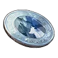
Медаль за победу над АрсоксомМедали за боссов
Медаль за победу над Арсоксом
ОбычныйМедаль за победу над Арсоксом, прозванный Пылающим рогатым зверем. Просто лежит в сумке и навсегда делает твоих палов сильнее.
Из игры
Медаль за победу над Арсоксом, прозванный Пылающим рогатым зверем. Просто находясь в инвентаре, навсегда повышает характеристики Палов в команде.
 Медаль за победу над БрончерриМедали за боссов
Медаль за победу над БрончерриМедали за боссов
Медаль за победу над Брончерри
ОбычныйМедаль за победу над Брончерри, прозванной Ветер, вестник весны. Просто лежит в сумке и навсегда делает твоих палов сильнее.
Из игры
Медаль за победу над Брончерри, прозванной Ветер, вестник весны. Просто находясь в инвентаре, навсегда увеличивает характеристики ваших Палов.
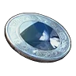
Медаль за победу над БусиМедали за боссов
Медаль за победу над Буси
ОбычныйМедаль за победу над Буси, прозванной Странствующий воин. Просто лежит в сумке и навсегда делает твоих палов сильнее.
Из игры
Медаль за победу над Буси, прозванной Странствующий воин. Просто находясь в инвентаре, навсегда увеличивает характеристики ваших Палов.
 Медаль за победу над ВаэлетМедали за боссов
Медаль за победу над ВаэлетМедали за боссов
Медаль за победу над Ваэлет
ОбычныйМедаль за победу над Ваэлета, прозванной Фиалковый морок. Просто лежит в сумке и навсегда делает твоих палов сильнее.
Из игры
Медаль за победу над Ваэлета, прозванной Фиалковый морок. Просто находясь в инвентаре, навсегда увеличивает характеристики ваших Палов.
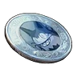
Медаль за победу над ГринтэйлМедали за боссов
Медаль за победу над Гринтэйл
ОбычныйМедаль за победу над Гринтэйла, прозванной Типом тела: маршмеллоу. Просто лежит в сумке и навсегда делает твоих палов сильнее.
Из игры
Медаль за победу над Гринтэйла, прозванной Типом тела: маршмеллоу. Просто находясь в инвентаре, навсегда увеличивает характеристики ваших Палов.
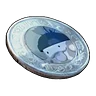
Медаль за победу над ГумоссМедали за боссов
Медаль за победу над Гумосс
ОбычныйМедаль за победу над Гумосса, прозванной Неожиданная мутация. Просто лежит в сумке и навсегда делает твоих палов сильнее.
Из игры
Медаль за победу над Гумосса, прозванной Неожиданная мутация. Просто находясь в инвентаре, навсегда увеличивает характеристики ваших Палов.
 Медаль за победу над ДумадМедали за боссов
Медаль за победу над ДумадМедали за боссов
Медаль за победу над Думад
ОбычныйМедаль за победу над Думада, прозванной Начну с понедельника. Просто лежит в сумке и навсегда делает твоих палов сильнее.
Из игры
Медаль за победу над Думада, прозванной Начну с понедельника. Просто находясь в инвентаре, навсегда увеличивает характеристики ваших Палов.
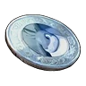
Медаль за победу над Каприти НоктМедали за боссов
Медаль за победу над Каприти Нокт
ОбычныйПросто находясь в инвентаре, навсегда увеличивает характеристики ваших Палов. Просто лежит в сумке и навсегда делает твоих палов сильнее.
Из игры
Медаль за победу над Каприти Нокта, прозванной Тёмная ферма. Просто находясь в инвентаре, навсегда увеличивает характеристики ваших Палов.
 Медаль за победу над КингпакаМедали за боссов
Медаль за победу над КингпакаМедали за боссов
Медаль за победу над Кингпака
ОбычныйМедаль за победу над Кингпаки, прозванной Повелитель мохнатых. Просто лежит в сумке и навсегда делает твоих палов сильнее.
Из игры
Медаль за победу над Кингпаки, прозванной Повелитель мохнатых. Просто находясь в инвентаре, навсегда увеличивает характеристики ваших Палов.
 Медаль за победу над НайтвингМедали за боссов
Медаль за победу над НайтвингМедали за боссов
Медаль за победу над Найтвинг
ОбычныйМедаль за победу над Найтвинга, прозванной Крылья, рассекающие небеса. Просто лежит в сумке и навсегда делает твоих палов сильнее.
Из игры
Медаль за победу над Найтвинга, прозванной Крылья, рассекающие небеса. Просто находясь в инвентаре, навсегда увеличивает характеристики ваших Палов.
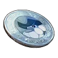
Медаль за победу над ПенкингМедали за боссов
Медаль за победу над Пенкинг
ОбычныйМедаль за победу над Пенкинга, прозванной Первопроходец ледяного моря. Просто лежит в сумке и навсегда делает твоих палов сильнее.
Из игры
Медаль за победу над Пенкинга, прозванной Первопроходец ледяного моря. Просто находясь в инвентаре, навсегда увеличивает характеристики ваших Палов.
 Медаль за победу над СвипаМедали за боссов
Медаль за победу над СвипаМедали за боссов
Медаль за победу над Свипа
ОбычныйМедаль за победу над Свипа, прозванной Загадочный король лохматиков. Просто лежит в сумке и навсегда делает твоих палов сильнее.
Из игры
Медаль за победу над Свипа, прозванной Загадочный король лохматиков. Просто находясь в инвентаре, навсегда увеличивает характеристики ваших Палов.
 Медаль за победу над ФенглопМедали за боссов
Медаль за победу над ФенглопМедали за боссов
Медаль за победу над Фенглоп
ОбычныйМедаль за победу над Фенглопа, прозванной Дрейфующее облако. Просто лежит в сумке и навсегда делает твоих палов сильнее.
Из игры
Медаль за победу над Фенглопа, прозванной Дрейфующее облако. Просто находясь в инвентаре, навсегда увеличивает характеристики ваших Палов.
🔑Медаль за победу над ФоксайкломМедали за боссов
Медаль за победу над Фоксайклом
ОбычныйПросто находясь в инвентаре, навсегда повышает характеристики Палов в команде. Просто лежит в сумке и навсегда делает твоих палов сильнее.
Из игры
Медаль за победу над Фоксайкл, прозванной Леденящей ледяной лисицей. Просто находясь в инвентаре, навсегда повышает характеристики Палов в команде.
 Медаль за победу над Фокспаркс КристМедали за боссов
Медаль за победу над Фокспаркс КристМедали за боссов
Медаль за победу над Фокспаркс Крист
ОбычныйМедаль за победу над Фокспаркса Крист, прозванной Ледяной цветок пути. Просто лежит в сумке и навсегда делает твоих палов сильнее.
Из игры
Медаль за победу над Фокспаркса Крист, прозванной Ледяной цветок пути. Просто находясь в инвентаре, навсегда увеличивает характеристики ваших Палов.
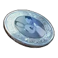
Медаль за победу над ЧиллетМедали за боссов
Медаль за победу над Чиллет
ОбычныйМедаль за победу над Чиллета, прозванной Танцор равнин. Просто лежит в сумке и навсегда делает твоих палов сильнее.
Из игры
Медаль за победу над Чиллета, прозванной Танцор равнин. Просто находясь в инвентаре, навсегда увеличивает характеристики ваших Палов.
 Медаль за победу над АзуробМедали за боссов
Медаль за победу над АзуробМедали за боссов
Медаль за победу над Азуроб
НеобычныйМедаль за победу над Азуроба, прозванной Озерная королева. Просто лежит в сумке и навсегда делает твоих палов сильнее.
Из игры
Медаль за победу над Азуроба, прозванной Озерная королева. Просто находясь в инвентаре, навсегда увеличивает характеристики ваших Палов.
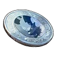
Медаль за победу над БлейзхауломМедали за боссов
Медаль за победу над Блейзхаулом
НеобычныйМедаль за победу над Блейзхаулом, прозванный Повелителем огненных всполохов. Просто лежит в сумке и навсегда делает твоих палов сильнее.
Из игры
Медаль за победу над Блейзхаулом, прозванный Повелителем огненных всполохов. Просто находясь в инвентаре, навсегда повышает характеристики Палов в команде.
 Медаль за победу над ВердашМедали за боссов
Медаль за победу над ВердашМедали за боссов
Медаль за победу над Вердаш
НеобычныйМедаль за победу над Вердаша, прозванной Лесной вихрь. Просто лежит в сумке и навсегда делает твоих палов сильнее.
Из игры
Медаль за победу над Вердаша, прозванной Лесной вихрь. Просто находясь в инвентаре, навсегда увеличивает характеристики ваших Палов.
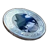
Медаль за победу над ВиксеномМедали за боссов
Медаль за победу над Виксеном
НеобычныйПросто находясь в инвентаре, навсегда повышает характеристики Палов в команде. Просто лежит в сумке и навсегда делает твоих палов сильнее.
Из игры
Медаль за победу над Виксен, прозванным Огненным лисом-магом. Просто находясь в инвентаре, навсегда повышает характеристики Палов в команде.
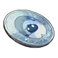
Медаль за победу над Вумпо БотанМедали за боссов
Медаль за победу над Вумпо Ботан
НеобычныйПросто находясь в инвентаре, навсегда увеличивает характеристики ваших Палов. Просто лежит в сумке и навсегда делает твоих палов сильнее.
Из игры
Медаль за победу над Вумпо Ботана, прозванной Гигант из южных краёв. Просто находясь в инвентаре, навсегда увеличивает характеристики ваших Палов.
 Медаль за победу над ГриззболтомМедали за боссов
Медаль за победу над ГриззболтомМедали за боссов
Медаль за победу над Гриззболтом
НеобычныйМедаль за победу над Гриззболтом, прозванным Громовыми когтями. Просто лежит в сумке и навсегда делает твоих палов сильнее.
Из игры
Медаль за победу над Гриззболтом, прозванным Громовыми когтями. Просто находясь в инвентаре, навсегда повышает характеристики Палов в команде.
 Медаль за победу над КатрессМедали за боссов
Медаль за победу над КатрессМедали за боссов
Медаль за победу над Катресс
НеобычныйМедаль за победу над Катресса, прозванной Тёмный кот-маг. Просто лежит в сумке и навсегда делает твоих палов сильнее.
Из игры
Медаль за победу над Катресса, прозванной Тёмный кот-маг. Просто находясь в инвентаре, навсегда увеличивает характеристики ваших Палов.
 Медаль за победу над Кингпака КристМедали за боссов
Медаль за победу над Кингпака КристМедали за боссов
Медаль за победу над Кингпака Крист
НеобычныйМедаль за победу над Кингпаки Крист, прозванной Повелитель синих мохнатых. Просто лежит в сумке и навсегда делает твоих палов сильнее.
Из игры
Медаль за победу над Кингпаки Крист, прозванной Повелитель синих мохнатых. Просто находясь в инвентаре, навсегда увеличивает характеристики ваших Палов.
 Медаль за победу над ЛунарисМедали за боссов
Медаль за победу над ЛунарисМедали за боссов
Медаль за победу над Лунарис
НеобычныйМедаль за победу над Лунариса, прозванной Пришелец из космоса. Просто лежит в сумке и навсегда делает твоих палов сильнее.
Из игры
Медаль за победу над Лунариса, прозванной Пришелец из космоса. Просто находясь в инвентаре, навсегда увеличивает характеристики ваших Палов.
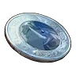
Медаль за победу над МамморестМедали за боссов
Медаль за победу над Мамморест
НеобычныйМедаль за победу над Маммореста, прозванной Неистовые бивни. Просто лежит в сумке и навсегда делает твоих палов сильнее.
Из игры
Медаль за победу над Маммореста, прозванной Неистовые бивни. Просто находясь в инвентаре, навсегда увеличивает характеристики ваших Палов.
 Медаль за победу над МенастингМедали за боссов
Медаль за победу над МенастингМедали за боссов
Медаль за победу над Менастинг
НеобычныйМедаль за победу над Менастинга, прозванной Всепронзающее копьё. Просто лежит в сумке и навсегда делает твоих палов сильнее.
Из игры
Медаль за победу над Менастинга, прозванной Всепронзающее копьё. Просто находясь в инвентаре, навсегда увеличивает характеристики ваших Палов.
 Медаль за победу над Моссанда ЛаксМедали за боссов
Медаль за победу над Моссанда ЛаксМедали за боссов
Медаль за победу над Моссанда Лакс
НеобычныйМедаль за победу над Моссанды Лакс, прозванной Чудак, поражённый молнией. Просто лежит в сумке и навсегда делает твоих палов сильнее.
Из игры
Медаль за победу над Моссанды Лакс, прозванной Чудак, поражённый молнией. Просто находясь в инвентаре, навсегда увеличивает характеристики ваших Палов.
 Медаль за победу над НидолломМедали за боссов
Медаль за победу над НидолломМедали за боссов
Медаль за победу над Нидоллом
НеобычныйПросто находясь в инвентаре, навсегда повышает характеристики Палов в команде. Просто лежит в сумке и навсегда делает твоих палов сильнее.
Из игры
Медаль за победу над Нидолл, прозванный Приветствием тысячью игл. Просто находясь в инвентаре, навсегда повышает характеристики Палов в команде.
 Медаль за победу над ПеталлияМедали за боссов
Медаль за победу над ПеталлияМедали за боссов
Медаль за победу над Петаллия
НеобычныйМедаль за победу над Петаллии, прозванной Леди цветочного сада. Просто лежит в сумке и навсегда делает твоих палов сильнее.
Из игры
Медаль за победу над Петаллии, прозванной Леди цветочного сада. Просто находясь в инвентаре, навсегда увеличивает характеристики ваших Палов.
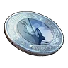
Медаль за победу над ПиринМедали за боссов
Медаль за победу над Пирин
НеобычныйМедаль за победу над Пирин, прозванным Быстроногим скакуном раскалённых песков. Просто лежит в сумке и навсегда делает твоих палов сильнее.
Из игры
Медаль за победу над Пирин, прозванным Быстроногим скакуном раскалённых песков. Просто находясь в инвентаре, навсегда повышает характеристики Палов в команде.
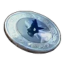
Медаль за победу над РайбердМедали за боссов
Медаль за победу над Райберд
НеобычныйМедаль за победу над Райберда, прозванной Крылья грома. Просто лежит в сумке и навсегда делает твоих палов сильнее.
Из игры
Медаль за победу над Райберда, прозванной Крылья грома. Просто находясь в инвентаре, навсегда увеличивает характеристики ваших Палов.
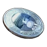
Медаль за победу над СибеликсМедали за боссов
Медаль за победу над Сибеликс
НеобычныйМедаль за победу над Сибеликса, прозванной Белоснежная леди. Просто лежит в сумке и навсегда делает твоих палов сильнее.
Из игры
Медаль за победу над Сибеликса, прозванной Белоснежная леди. Просто находясь в инвентаре, навсегда увеличивает характеристики ваших Палов.
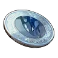
Медаль за победу над СудзакуМедали за боссов
Медаль за победу над Судзаку
НеобычныйМедаль за победу над Судзаку, прозванной Алый хозяин небес. Просто лежит в сумке и навсегда делает твоих палов сильнее.
Из игры
Медаль за победу над Судзаку, прозванной Алый хозяин небес. Просто находясь в инвентаре, навсегда увеличивает характеристики ваших Палов.
 Медаль за победу над ТарантриссМедали за боссов
Медаль за победу над ТарантриссМедали за боссов
Медаль за победу над Тарантрисс
НеобычныйМедаль за победу над Тарантрисса, прозванной Хитроумный прядильщик. Просто лежит в сумке и навсегда делает твоих палов сильнее.
Из игры
Медаль за победу над Тарантрисса, прозванной Хитроумный прядильщик. Просто находясь в инвентаре, навсегда увеличивает характеристики ваших Палов.
 Медаль за победу над ФелбэтМедали за боссов
Медаль за победу над ФелбэтМедали за боссов
Медаль за победу над Фелбэт
НеобычныйМедаль за победу над Фелбэта, прозванной Сумеречный вампир. Просто лежит в сумке и навсегда делает твоих палов сильнее.
Из игры
Медаль за победу над Фелбэта, прозванной Сумеречный вампир. Просто находясь в инвентаре, навсегда увеличивает характеристики ваших Палов.
 Медаль за победу над ЭлизабиМедали за боссов
Медаль за победу над ЭлизабиМедали за боссов
Медаль за победу над Элизаби
НеобычныйМедаль за победу над Элизаби, прозванной Королева улья. Просто лежит в сумке и навсегда делает твоих палов сильнее.
Из игры
Медаль за победу над Элизаби, прозванной Королева улья. Просто находясь в инвентаре, навсегда увеличивает характеристики ваших Палов.
 Медаль за победу над ЭлфидранМедали за боссов
Медаль за победу над ЭлфидранМедали за боссов
Медаль за победу над Элфидран
НеобычныйМедаль за победу над Элфидрана, прозванной Добродушный небесный дракон. Просто лежит в сумке и навсегда делает твоих палов сильнее.
Из игры
Медаль за победу над Элфидрана, прозванной Добродушный небесный дракон. Просто находясь в инвентаре, навсегда увеличивает характеристики ваших Палов.
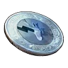
Медаль за победу над ЮнивольтМедали за боссов
Медаль за победу над Юнивольт
НеобычныйМедаль за победу над Юнивольта, прозванной Стремительный вихрь. Просто лежит в сумке и навсегда делает твоих палов сильнее.
Из игры
Медаль за победу над Юнивольта, прозванной Стремительный вихрь. Просто находясь в инвентаре, навсегда увеличивает характеристики ваших Палов.
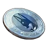
Медаль за победу над АнубисМедали за боссов
Медаль за победу над Анубис
РедкийМедаль за победу над Анубиса, прозванной Хранитель тёмного солнца. Просто лежит в сумке и навсегда делает твоих палов сильнее.
Из игры
Медаль за победу над Анубиса, прозванной Хранитель тёмного солнца. Просто находясь в инвентаре, навсегда увеличивает характеристики ваших Палов.
 Медаль за победу над АстегонМедали за боссов
Медаль за победу над АстегонМедали за боссов
Медаль за победу над Астегон
РедкийМедаль за победу над Астегоном, прозванной Стальным Драконим Владыкой. Просто лежит в сумке и навсегда делает твоих палов сильнее.
Из игры
Медаль за победу над Астегоном, прозванной Стальным Драконим Владыкой. Просто находясь в инвентаре, навсегда увеличивает характеристики ваших Палов.
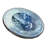
Медаль за победу над БлазамутМедали за боссов
Медаль за победу над Блазамут
РедкийМедаль за победу над Блазамута, прозванной Деспот Чистилища. Просто лежит в сумке и навсегда делает твоих палов сильнее.
Из игры
Медаль за победу над Блазамута, прозванной Деспот Чистилища. Просто находясь в инвентаре, навсегда увеличивает характеристики ваших Палов.
 Медаль за победу над Брончерри АкваМедали за боссов
Медаль за победу над Брончерри АкваМедали за боссов
Медаль за победу над Брончерри Аква
РедкийМедаль за победу над Брончерри Аква, прозванной Прибой, вестник лета. Просто лежит в сумке и навсегда делает твоих палов сильнее.
Из игры
Медаль за победу над Брончерри Аква, прозванной Прибой, вестник лета. Просто находясь в инвентаре, навсегда увеличивает характеристики ваших Палов.
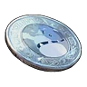
Медаль за победу над ВаласкойМедали за боссов
Медаль за победу над Валаской
РедкийМедаль за победу над Валаской, прозванной Добродушное ледяное копьё. Просто лежит в сумке и навсегда делает твоих палов сильнее.
Из игры
Медаль за победу над Валаской, прозванной Добродушное ледяное копьё. При наличии навсегда повышает характеристики находящихся с вами Палов.
 Медаль за победу над ВорсектМедали за боссов
Медаль за победу над ВорсектМедали за боссов
Медаль за победу над Ворсект
РедкийМедаль за победу над Ворсекта, прозванной Воин в тяжёлых доспехах. Просто лежит в сумке и навсегда делает твоих палов сильнее.
Из игры
Медаль за победу над Ворсекта, прозванной Воин в тяжёлых доспехах. Просто находясь в инвентаре, навсегда увеличивает характеристики ваших Палов.
 Медаль за победу над Диноссум ЛаксМедали за боссов
Медаль за победу над Диноссум ЛаксМедали за боссов
Медаль за победу над Диноссум Лакс
РедкийМедаль за победу над Диноссума Лакс, прозванной Дракон-хранитель молнии. Просто лежит в сумке и навсегда делает твоих палов сильнее.
Из игры
Медаль за победу над Диноссума Лакс, прозванной Дракон-хранитель молнии. Просто находясь в инвентаре, навсегда увеличивает характеристики ваших Палов.
 Медаль за победу над ДуалитМедали за боссов
Медаль за победу над ДуалитМедали за боссов
Медаль за победу над Дуалит
РедкийМедаль за победу над Дуалитом, прозванным Дуалистом синей жилы. Просто лежит в сумке и навсегда делает твоих палов сильнее.
Из игры
Медаль за победу над Дуалитом, прозванным Дуалистом синей жилы. Просто находясь в инвентаре, навсегда повышает характеристики Палов в команде.
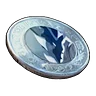
Медаль за победу над ЙормунтайдМедали за боссов
Медаль за победу над Йормунтайд
РедкийМедаль за победу над Йормунтайда, прозванной Властелин морей. Просто лежит в сумке и навсегда делает твоих палов сильнее.
Из игры
Медаль за победу над Йормунтайда, прозванной Властелин морей. Просто находясь в инвентаре, навсегда увеличивает характеристики ваших Палов.
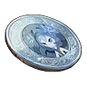
Медаль за победу над ЛилинМедали за боссов
Медаль за победу над Лилин
РедкийМедаль за победу над Лилин, прозванной Императрицей лилий. Просто лежит в сумке и навсегда делает твоих палов сильнее.
Из игры
Медаль за победу над Лилин, прозванной Императрицей лилий. Просто находясь в инвентаре, навсегда повышает характеристики Палов в команде.
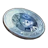
Медаль за победу над Лилин НоктМедали за боссов
Медаль за победу над Лилин Нокт
РедкийМедаль за победу над Лилин Нокт, прозванной Императрица Бездны. Просто лежит в сумке и навсегда делает твоих палов сильнее.
Из игры
Медаль за победу над Лилин Нокт, прозванной Императрица Бездны. Просто находясь в инвентаре, навсегда увеличивает характеристики ваших Палов.
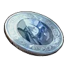
Медаль за победу над Менастинг ТерраМедали за боссов
Медаль за победу над Менастинг Терра
РедкийМедаль за победу над Менастинга Терра, прозванной Копьё, пронзающее золото. Просто лежит в сумке и навсегда делает твоих палов сильнее.
Из игры
Медаль за победу над Менастинга Терра, прозванной Копьё, пронзающее золото. Просто находясь в инвентаре, навсегда увеличивает характеристики ваших Палов.
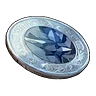
Медаль за победу над ПиродономМедали за боссов
Медаль за победу над Пиродоном
РедкийМедаль за победу над Пиродоном, прозванным Ходячей рудной жилой. Просто лежит в сумке и навсегда делает твоих палов сильнее.
Из игры
Медаль за победу над Пиродоном, прозванным Ходячей рудной жилой. Просто находясь в инвентаре, навсегда повышает характеристики Палов в команде.
 Медаль за победу над РептироМедали за боссов
Медаль за победу над РептироМедали за боссов
Медаль за победу над Рептиро
РедкийМедаль за победу над Рептиро, прозванным Пожирателем лавы. Просто лежит в сумке и навсегда делает твоих палов сильнее.
Из игры
Медаль за победу над Рептиро, прозванным Пожирателем лавы. Просто находясь в инвентаре, навсегда повышает характеристики Палов в команде.
 Медаль за победу над Риббани БотанМедали за боссов
Медаль за победу над Риббани БотанМедали за боссов
Медаль за победу над Риббани Ботан
РедкийПросто находясь в инвентаре, навсегда увеличивает характеристики ваших Палов. Просто лежит в сумке и навсегда делает твоих палов сильнее.
Из игры
Медаль за победу над Риббани Ботана, прозванной Сияющая улыбка. Просто находясь в инвентаре, навсегда увеличивает характеристики ваших Палов.
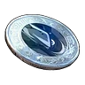
Медаль за победу над ТеранайтМедали за боссов
Медаль за победу над Теранайт
РедкийМедаль за победу над Теранайта, прозванной Гигантский ходячий доспех. Просто лежит в сумке и навсегда делает твоих палов сильнее.
Из игры
Медаль за победу над Теранайта, прозванной Гигантский ходячий доспех. Просто находясь в инвентаре, навсегда увеличивает характеристики ваших Палов.
 Медаль за победу над ТетроисМедали за боссов
Медаль за победу над ТетроисМедали за боссов
Медаль за победу над Тетроис
РедкийМедаль за победу над Тетроис, прозванным Гигантская скала Песчаного моря. Просто лежит в сумке и навсегда делает твоих палов сильнее.
Из игры
Медаль за победу над Тетроис, прозванным Гигантская скала Песчаного моря. Просто находясь в инвентаре, навсегда повышает характеристики Палов в команде.
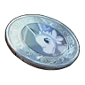
Медаль за победу над ФэскиМедали за боссов
Медаль за победу над Фэски
РедкийМедаль за победу над Фэски, прозванной Белоснежный странник небес. Просто лежит в сумке и навсегда делает твоих палов сильнее.
Из игры
Медаль за победу над Фэски, прозванной Белоснежный странник небес. Просто находясь в инвентаре, навсегда увеличивает характеристики ваших Палов.
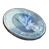
Медаль за победу над ГилдейнМедали за боссов
Медаль за победу над Гилдейн
ЭпическийМедаль за победу над Гилдейна, прозванной Зверь-хранитель сумерек. Просто лежит в сумке и навсегда делает твоих палов сильнее.
Из игры
Медаль за победу над Гилдейна, прозванной Зверь-хранитель сумерек. Просто находясь в инвентаре, навсегда увеличивает характеристики ваших Палов.
 Медаль за победу над Даззи НоктМедали за боссов
Медаль за победу над Даззи НоктМедали за боссов
Медаль за победу над Даззи Нокт
ЭпическийПросто находясь в инвентаре, навсегда увеличивает характеристики ваших Палов. Просто лежит в сумке и навсегда делает твоих палов сильнее.
Из игры
Медаль за победу над Даззи Нокта, прозванной Дитя чёрного облака. Просто находясь в инвентаре, навсегда увеличивает характеристики ваших Палов.
 Медаль за победу над Криолинкс ТерраМедали за боссов
Медаль за победу над Криолинкс ТерраМедали за боссов
Медаль за победу над Криолинкс Терра
ЭпическийМедаль за победу над Криолинкса Терра, прозванной Хищник земли. Просто лежит в сумке и навсегда делает твоих палов сильнее.
Из игры
Медаль за победу над Криолинкса Терра, прозванной Хищник земли. Просто находясь в инвентаре, навсегда увеличивает характеристики ваших Палов.
 Медаль за победу над НайтмериМедали за боссов
Медаль за победу над НайтмериМедали за боссов
Медаль за победу над Найтмери
ЭпическийМедаль за победу над Найтмери, прозванной Душа тёмного зайца. Просто лежит в сумке и навсегда делает твоих палов сильнее.
Из игры
Медаль за победу над Найтмери, прозванной Душа тёмного зайца. Просто находясь в инвентаре, навсегда увеличивает характеристики ваших Палов.
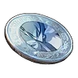
Медаль за победу над НептилусМедали за боссов
Медаль за победу над Нептилус
ЭпическийМедаль за победу над Нептилиусом, прозванной Легендарное морское чудище. Просто лежит в сумке и навсегда делает твоих палов сильнее.
Из игры
Медаль за победу над Нептилиусом, прозванной Легендарное морское чудище. Просто находясь в инвентаре, навсегда увеличивает характеристики ваших Палов.
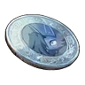
Медаль за победу над НяфияМедали за боссов
Медаль за победу над Няфия
ЭпическийМедаль за победу над Няфии, прозванной Охотник ночных теней. Просто лежит в сумке и навсегда делает твоих палов сильнее.
Из игры
Медаль за победу над Няфии, прозванной Охотник ночных теней. Просто находясь в инвентаре, навсегда увеличивает характеристики ваших Палов.
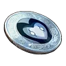
Медаль за победу над ОмаскулМедали за боссов
Медаль за победу над Омаскул
ЭпическийМедаль за победу над Омаскула, прозванной Столикий апостол. Просто лежит в сумке и навсегда делает твоих палов сильнее.
Из игры
Медаль за победу над Омаскула, прозванной Столикий апостол. Просто находясь в инвентаре, навсегда увеличивает характеристики ваших Палов.
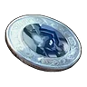
Медаль за победу над ПаладиусМедали за боссов
Медаль за победу над Паладиус
ЭпическийМедаль за победу над Двумя рыцарями. Просто лежит в сумке и навсегда делает твоих палов сильнее.
Из игры
Медаль за победу над Двумя рыцарями. Просто находясь в инвентаре, навсегда увеличивает характеристики ваших Палов.
 Медаль за победу над Пиродон КристМедали за боссов
Медаль за победу над Пиродон КристМедали за боссов
Медаль за победу над Пиродон Крист
ЭпическийМедаль за победу над Пиродон Крист, прозванным Ходячей ледяной жилой. Просто лежит в сумке и навсегда делает твоих палов сильнее.
Из игры
Медаль за победу над Пиродон Крист, прозванным Ходячей ледяной жилой. Просто находясь в инвентаре, навсегда повышает характеристики Палов в команде.
 Медаль за победу над ПрунелияМедали за боссов
Медаль за победу над ПрунелияМедали за боссов
Медаль за победу над Прунелия
ЭпическийМедаль за победу над Прунелии, прозванной Прислужница Индиго. Просто лежит в сумке и навсегда делает твоих палов сильнее.
Из игры
Медаль за победу над Прунелии, прозванной Прислужница Индиго. Просто находясь в инвентаре, навсегда увеличивает характеристики ваших Палов.
 Медаль за победу над Релаксаурус ЛаксМедали за боссов
Медаль за победу над Релаксаурус ЛаксМедали за боссов
Медаль за победу над Релаксаурус Лакс
ЭпическийМедаль за победу над Релаксауруса Лакс, прозванной Громовой дракон-обжора. Просто лежит в сумке и навсегда делает твоих палов сильнее.
Из игры
Медаль за победу над Релаксауруса Лакс, прозванной Громовой дракон-обжора. Просто находясь в инвентаре, навсегда увеличивает характеристики ваших Палов.
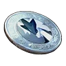
Медаль за победу над СилвегисМедали за боссов
Медаль за победу над Силвегис
ЭпическийМедаль за победу над Силвегиса, прозванной Стальной дракон-хранитель. Просто лежит в сумке и навсегда делает твоих палов сильнее.
Из игры
Медаль за победу над Силвегиса, прозванной Стальной дракон-хранитель. Просто находясь в инвентаре, навсегда увеличивает характеристики ваших Палов.
 Медаль за победу над СмокиМедали за боссов
Медаль за победу над СмокиМедали за боссов
Медаль за победу над Смоки
ЭпическийМедаль за победу над Смоки, прозванной Маленький тёмный герой. Просто лежит в сумке и навсегда делает твоих палов сильнее.
Из игры
Медаль за победу над Смоки, прозванной Маленький тёмный герой. Просто находясь в инвентаре, навсегда увеличивает характеристики ваших Палов.
 Медаль за победу над СтаррионМедали за боссов
Медаль за победу над СтаррионМедали за боссов
Медаль за победу над Старрион
ЭпическийМедаль за победу над Старриона, прозванной Лазурная грива. Просто лежит в сумке и навсегда делает твоих палов сильнее.
Из игры
Медаль за победу над Старриона, прозванной Лазурная грива. Просто находясь в инвентаре, навсегда увеличивает характеристики ваших Палов.
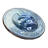
Медаль за победу над Тетроис ПримоМедали за боссов
Медаль за победу над Тетроис Примо
ЭпическийМедаль за победу над Тетроис Примо, прозванный Скала-хранитель Песчаного моря. Просто лежит в сумке и навсегда делает твоих палов сильнее.
Из игры
Медаль за победу над Тетроис Примо, прозванный Скала-хранитель Песчаного моря. Просто находясь в инвентаре, навсегда увеличивает характеристики ваших Палов.
 Медаль за победу над Фенглоп ЛаксМедали за боссов
Медаль за победу над Фенглоп ЛаксМедали за боссов
Медаль за победу над Фенглоп Лакс
ЭпическийМедаль за победу над Фенглопа Лакс, прозванной Шальная молния. Просто лежит в сумке и навсегда делает твоих палов сильнее.
Из игры
Медаль за победу над Фенглопа Лакс, прозванной Шальная молния. Просто находясь в инвентаре, навсегда увеличивает характеристики ваших Палов.
 Медаль за победу над ФросталлионМедали за боссов
Медаль за победу над ФросталлионМедали за боссов
Медаль за победу над Фросталлион
ЭпическийМедаль за победу над Фросталлиона, прозванной Легендарный ледяной Пегас. Просто лежит в сумке и навсегда делает твоих палов сильнее.
Из игры
Медаль за победу над Фросталлиона, прозванной Легендарный ледяной Пегас. Просто находясь в инвентаре, навсегда увеличивает характеристики ваших Палов.
 Заражённое ядро модифицированного ПалаМедали за боссов
Заражённое ядро модифицированного ПалаМедали за боссов
Заражённое ядро модифицированного Пала
ЛегендарныйДоказательство победы над модифицированными Палами. Просто лежит в сумке и навсегда делает твоих палов сильнее.
Из игры
Доказательство победы над модифицированными Палами. Один из ключей, необходимых для снятия барьера в Зале Печати, расположенном в глубинах Мирового Древа.
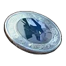
Медаль за победу над АзурмейнМедали за боссов
Медаль за победу над Азурмейн
ЛегендарныйМедаль за победу над Азурмейна, прозванной Скакун лазурного грома. Просто лежит в сумке и навсегда делает твоих палов сильнее.
Из игры
Медаль за победу над Азурмейна, прозванной Скакун лазурного грома. Просто находясь в инвентаре, навсегда увеличивает характеристики ваших Палов.
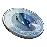
Медаль за победу над АйдролономМедали за боссов
Медаль за победу над Айдролоном
ЛегендарныйМедаль за победу над Айдролоном, прозванным Крыльями свободы. Просто лежит в сумке и навсегда делает твоих палов сильнее.
Из игры
Медаль за победу над Айдролоном, прозванным Крыльями свободы. Просто находясь в инвентаре, навсегда повышает характеристики Палов в команде.
 Медаль за победу над АэгидрономМедали за боссов
Медаль за победу над АэгидрономМедали за боссов
Медаль за победу над Аэгидроном
ЛегендарныйМедаль за победу над Аэгидроном, прозванный Дракон-хранитель световых следов. Просто лежит в сумке и навсегда делает твоих палов сильнее.
Из игры
Медаль за победу над Аэгидроном, прозванный Дракон-хранитель световых следов. Просто находясь в инвентаре, навсегда повышает характеристики Палов в команде.
 Медаль за победу над Валаска ИгнисМедали за боссов
Медаль за победу над Валаска ИгнисМедали за боссов
Медаль за победу над Валаска Игнис
ЛегендарныйМедаль за победу над Валаской Игнис, прозванной Добродушное красное копьё. Просто лежит в сумке и навсегда делает твоих палов сильнее.
Из игры
Медаль за победу над Валаской Игнис, прозванной Добродушное красное копьё. Просто находясь в инвентаре, навсегда увеличивает характеристики ваших Палов.
 Медаль за победу над ВистеллойМедали за боссов
Медаль за победу над ВистеллойМедали за боссов
Медаль за победу над Вистеллой
ЛегендарныйМедаль за победу над Вистеллой, прозванной Облачённой в ночное небо. Просто лежит в сумке и навсегда делает твоих палов сильнее.
Из игры
Медаль за победу над Вистеллой, прозванной Облачённой в ночное небо. Просто находясь в инвентаре, навсегда повышает характеристики Палов в команде.
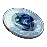
Медаль за победу над Ворсект ТерраМедали за боссов
Медаль за победу над Ворсект Терра
ЛегендарныйМедаль за победу над Ворсекта Терра, прозванной Воин в золотых доспехах. Просто лежит в сумке и навсегда делает твоих палов сильнее.
Из игры
Медаль за победу над Ворсекта Терра, прозванной Воин в золотых доспехах. Просто находясь в инвентаре, навсегда увеличивает характеристики ваших Палов.
 Медаль за победу над ДжетрагонМедали за боссов
Медаль за победу над ДжетрагонМедали за боссов
Медаль за победу над Джетрагон
ЛегендарныйМедаль за победу над Джетрагона, прозванной Легендарный метеоритный дракон. Просто лежит в сумке и навсегда делает твоих палов сильнее.
Из игры
Медаль за победу над Джетрагона, прозванной Легендарный метеоритный дракон. Просто находясь в инвентаре, навсегда увеличивает характеристики ваших Палов.
 Медаль за победу над ДинамоффомМедали за боссов
Медаль за победу над ДинамоффомМедали за боссов
Медаль за победу над Динамоффом
ЛегендарныйМедаль за победу над Динамоффом, прозванный Искрящимся пушистиком. Просто лежит в сумке и навсегда делает твоих палов сильнее.
Из игры
Медаль за победу над Динамоффом, прозванный Искрящимся пушистиком. Просто находясь в инвентаре, навсегда повышает характеристики Палов в команде.
 Медаль за победу над Дуалит НоктМедали за боссов
Медаль за победу над Дуалит НоктМедали за боссов
Медаль за победу над Дуалит Нокт
ЛегендарныйМедаль за победу над Дуалит Ноктом, прозванным Дуалистом фиолетовой жилы. Просто лежит в сумке и навсегда делает твоих палов сильнее.
Из игры
Медаль за победу над Дуалит Ноктом, прозванным Дуалистом фиолетовой жилы. Просто находясь в инвентаре, навсегда повышает характеристики Палов в команде.
 Медаль за победу над Кицун НоктМедали за боссов
Медаль за победу над Кицун НоктМедали за боссов
Медаль за победу над Кицун Нокт
ЛегендарныйМедаль за победу над Кицуна Нокт, прозванной Хранитель тёмного пламени. Просто лежит в сумке и навсегда делает твоих палов сильнее.
Из игры
Медаль за победу над Кицуна Нокт, прозванной Хранитель тёмного пламени. Просто находясь в инвентаре, навсегда увеличивает характеристики ваших Палов.
 Медаль за победу над Лупмун КристМедали за боссов
Медаль за победу над Лупмун КристМедали за боссов
Медаль за победу над Лупмун Крист
ЛегендарныйМедаль за победу над Лупмуна Крист, прозванной Мерцающий в ледяном лунном свете. Просто лежит в сумке и навсегда делает твоих палов сильнее.
Из игры
Медаль за победу над Лупмуна Крист, прозванной Мерцающий в ледяном лунном свете. Просто находясь в инвентаре, навсегда увеличивает характеристики ваших Палов.
 Медаль за победу над МикораМедали за боссов
Медаль за победу над МикораМедали за боссов
Медаль за победу над Микора
ЛегендарныйМедаль за победу над Микорой, прозванной Милым грибом. Просто лежит в сумке и навсегда делает твоих палов сильнее.
Из игры
Медаль за победу над Микорой, прозванной Милым грибом. Просто находясь в инвентаре, навсегда повышает характеристики Палов в команде.
 Медаль за победу над Молдрон КристМедали за боссов
Медаль за победу над Молдрон КристМедали за боссов
Медаль за победу над Молдрон Крист
ЛегендарныйМедаль за победу над Молдрон Крист, прозванным Ступающим по ледяной земле. Просто лежит в сумке и навсегда делает твоих палов сильнее.
Из игры
Медаль за победу над Молдрон Крист, прозванным Ступающим по ледяной земле. Просто находясь в инвентаре, навсегда повышает характеристики Палов в команде.
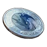
Медаль за победу над МолдрономМедали за боссов
Медаль за победу над Молдроном
ЛегендарныйМедаль за победу над Молдроном, прозванный Ступающей по выжженной земле. Просто лежит в сумке и навсегда делает твоих палов сильнее.
Из игры
Медаль за победу над Молдроном, прозванный Ступающей по выжженной земле. Просто находясь в инвентаре, навсегда повышает характеристики Палов в команде.
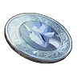
Медаль за победу над ОфидиейМедали за боссов
Медаль за победу над Офидией
ЛегендарныйМедаль за победу над Офидией, прозванной Невинным драконом водяных цветов. Просто лежит в сумке и навсегда делает твоих палов сильнее.
Из игры
Медаль за победу над Офидией, прозванной Невинным драконом водяных цветов. Просто находясь в инвентаре, навсегда повышает характеристики Палов в команде.
 Медаль за победу над РэндзишиМедали за боссов
Медаль за победу над РэндзишиМедали за боссов
Медаль за победу над Рэндзиши
ЛегендарныйМедаль за победу над Рэндзиши, прозванным Срывающим аплодисменты. Просто лежит в сумке и навсегда делает твоих палов сильнее.
Из игры
Медаль за победу над Рэндзиши, прозванным Срывающим аплодисменты. Просто находясь в инвентаре, навсегда повышает характеристики Палов в команде.
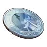
Медаль за победу над СелесдирМедали за боссов
Медаль за победу над Селесдир
ЛегендарныйМедаль за победу над Селесдира, прозванной Зверь-спаситель. Просто лежит в сумке и навсегда делает твоих палов сильнее.
Из игры
Медаль за победу над Селесдира, прозванной Зверь-спаситель. Просто находясь в инвентаре, навсегда увеличивает характеристики ваших Палов.
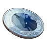
Медаль за победу над Селесдир НоктМедали за боссов
Медаль за победу над Селесдир Нокт
ЛегендарныйМедаль за победу над Селесдир Нокт, прозванным Зверем хаоса. Просто лежит в сумке и навсегда делает твоих палов сильнее.
Из игры
Медаль за победу над Селесдир Нокт, прозванным Зверем хаоса. Просто находясь в инвентаре, навсегда повышает характеристики Палов в команде.
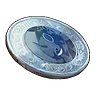
Медаль за победу над Скорпио ЛаксМедали за боссов
Медаль за победу над Скорпио Лакс
ЛегендарныйМедаль за победу над Скорпио Лакс, прозванным Громовым мальчиком. Просто лежит в сумке и навсегда делает твоих палов сильнее.
Из игры
Медаль за победу над Скорпио Лакс, прозванным Громовым мальчиком. Просто находясь в инвентаре, навсегда повышает характеристики Палов в команде.
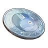
Медаль за победу над СлоуваттомМедали за боссов
Медаль за победу над Слоуваттом
ЛегендарныйМедаль за победу над Слоуваттом, прозванным Электризующим флегматиком. Просто лежит в сумке и навсегда делает твоих палов сильнее.
Из игры
Медаль за победу над Слоуваттом, прозванным Электризующим флегматиком. Просто находясь в инвентаре, навсегда повышает характеристики Палов в команде.
 Медаль за победу над СнокомМедали за боссов
Медаль за победу над СнокомМедали за боссов
Медаль за победу над Сноком
ЛегендарныйМедаль за победу над Сноком, прозванным Тихоходом синего тока. Просто лежит в сумке и навсегда делает твоих палов сильнее.
Из игры
Медаль за победу над Сноком, прозванным Тихоходом синего тока. Просто находясь в инвентаре, навсегда повышает характеристики Палов в команде.
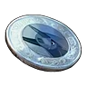
Медаль за победу над СплаттеринаМедали за боссов
Медаль за победу над Сплаттерина
ЛегендарныйМедаль за победу над Сплаттерины, прозванной Кровавый расчленитель. Просто лежит в сумке и навсегда делает твоих палов сильнее.
Из игры
Медаль за победу над Сплаттерины, прозванной Кровавый расчленитель. Просто находясь в инвентаре, навсегда увеличивает характеристики ваших Палов.
 Медаль за победу над Фалерис АкваМедали за боссов
Медаль за победу над Фалерис АкваМедали за боссов
Медаль за победу над Фалерис Аква
ЛегендарныйМедаль за победу над Фалериса Аква, прозванной Владыка Небесных Вод. Просто лежит в сумке и навсегда делает твоих палов сильнее.
Из игры
Медаль за победу над Фалериса Аква, прозванной Владыка Небесных Вод. Просто находясь в инвентаре, навсегда увеличивает характеристики ваших Палов.
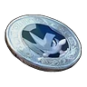
Медаль за победу над ФларакломМедали за боссов
Медаль за победу над Флараклом
ЛегендарныйМедаль за победу над Флараклом, прозванным Хитрым предсказателем. Просто лежит в сумке и навсегда делает твоих палов сильнее.
Из игры
Медаль за победу над Флараклом, прозванным Хитрым предсказателем. Просто находясь в инвентаре, навсегда повышает характеристики Палов в команде.
 Медаль за победу над Фросталлион НоктМедали за боссов
Медаль за победу над Фросталлион НоктМедали за боссов
Медаль за победу над Фросталлион Нокт
ЛегендарныйМедаль за победу над Фросталлиона Нокт, прозванной Легендарный тёмный Пегас. Просто лежит в сумке и навсегда делает твоих палов сильнее.
Из игры
Медаль за победу над Фросталлиона Нокт, прозванной Легендарный тёмный Пегас. Просто находясь в инвентаре, навсегда увеличивает характеристики ваших Палов.
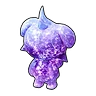
Статуя ДепрессоОсобые предметы
Статуя Депрессо
РедкийТаинственная статуя Пала, встречающаяся по всему острову Палпагос. Используется у особой статуи для усиления игрока.
 Статуя КаттиваОсобые предметы
Статуя КаттиваОсобые предметы
Статуя Каттива
РедкийТаинственная статуя Пала, встречающаяся по всему острову Палпагос. Используется у особой статуи для усиления игрока.
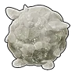
Статуя ЛамболлаОсобые предметы
Статуя Ламболла
РедкийТаинственная статуя Пала, встречающаяся по всему острову Палпагос. Используется у особой статуи для усиления игрока.
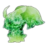
Статуя ЛифманкаОсобые предметы
Статуя Лифманка
РедкийЗагадочные статуи Палов, встречающиеся по всему острову Палпагос. Подношение у особой статуи позволяет усилить игрока.
 Статуя МанчиллаОсобые предметы
Статуя МанчиллаОсобые предметы
Статуя Манчилла
РедкийТаинственная статуя Пала, встречающаяся по всему острову Палпагос. Используется у особой статуи для усиления игрока.
 Статуя ПенгуллетаОсобые предметы
Статуя ПенгуллетаОсобые предметы
Статуя Пенгуллета
РедкийТаинственная статуя Пала, встречающаяся по всему острову Палпагос. Используется у особой статуи для усиления игрока.
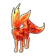
Статуя РубиОсобые предметы
Статуя Руби
РедкийТаинственная статуя Пала, встречающаяся по всему острову Палпагос. Используется у особой статуи для усиления игрока.
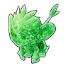
Статуя ТанзиОсобые предметы
Статуя Танзи
РедкийТаинственная статуя Пала, встречающаяся по всему острову Палпагос. Используется у особой статуи для усиления игрока.
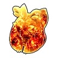
Статуя ХербилаОсобые предметы
Статуя Хербила
РедкийТаинственная статуя Пала, встречающаяся по всему острову Палпагос. Используется у особой статуи для усиления игрока.
 Статуя ЛунарисаОсобые предметы
Статуя ЛунарисаОсобые предметы
Статуя Лунариса
ЭпическийТаинственная статуя Пала, встречающаяся по всему острову Палпагос. Используется у особой статуи для усиления игрока.
 Статуя МимидогаОсобые предметы
Статуя МимидогаОсобые предметы
Статуя Мимидога
ЭпическийТаинственная статуя Пала, иногда получаемая при поимке множества Палов. Используется у особой статуи для усиления игрока.
Статуя РелаксаурусаОсобые предметы
Статуя Релаксауруса
ЭпическийТаинственная статуя Пала, встречающаяся по всему острову Палпагос. Используется у особой статуи для усиления игрока.
Статуя ЯкумоОсобые предметы
Статуя Якумо
ЭпическийТаинственная статуя Пала, встречающаяся по всему острову Палпагос. Используется у особой статуи для усиления игрока.
 Ключ-сфера ГневаОсобые предметы
Ключ-сфера ГневаОсобые предметы
Ключ-сфера Гнева
ЛегендарныйАртефакт древней цивилизации, некогда процветавшей на этой земле.
Из игры
Артефакт древней цивилизации, некогда процветавшей на этой земле. Его истинная природа до сих пор не установлена, но исследования последних лет указывают на то, что он может быть частью огромного механизма. «Проклятие, отдавшее себя ярости и сеявшее смерть вокруг.»
Ключ-сфера ГордыниОсобые предметы
Ключ-сфера Гордыни
ЛегендарныйАртефакт древней цивилизации, некогда процветавшей на этой земле.
Из игры
Артефакт древней цивилизации, некогда процветавшей на этой земле. Его истинная природа до сих пор не установлена, но исследования последних лет указывают на то, что он может быть частью огромного механизма. «Проклятие, в своей гордыне возжелавшее сосуществования и обрекшее мир на бедствие.»
Ключ-сфера ЖадностиОсобые предметы
Ключ-сфера Жадности
ЛегендарныйАртефакт древней цивилизации, некогда процветавшей на этой земле.
Из игры
Артефакт древней цивилизации, некогда процветавшей на этой земле. Его истинная природа до сих пор не установлена, но исследования последних лет указывают на то, что он может быть частью огромного механизма. «Проклятие, отвергшее свою судьбу и возжелавшее уз судьбы.»
 Ключ-сфера ЗавистиОсобые предметы
Ключ-сфера ЗавистиОсобые предметы
Ключ-сфера Зависти
ЛегендарныйАртефакт древней цивилизации, некогда процветавшей на этой земле.
Из игры
Артефакт древней цивилизации, некогда процветавшей на этой земле. Его истинная природа до сих пор не установлена, но исследования последних лет указывают на то, что он может быть частью огромного механизма. «Проклятие, принесённое завистью к расцвету человечества и повлёкшее за собой гибель.»
 Ключ-сфера ЛениОсобые предметы
Ключ-сфера ЛениОсобые предметы
Ключ-сфера Лени
ЛегендарныйАртефакт древней цивилизации, некогда процветавшей на этой земле.
Из игры
Артефакт древней цивилизации, некогда процветавшей на этой земле. Его истинная природа до сих пор не установлена, но исследования последних лет указывают на то, что он может быть частью огромного механизма. «Проклятие, отвергшее человечность и павшее на путь гибели.»
Ключ-сфера Первородного грехаОсобые предметы
Ключ-сфера Первородного греха
ЛегендарныйАртефакт древней цивилизации, некогда процветавшей на этой земле.
Из игры
Артефакт древней цивилизации, некогда процветавшей на этой земле. Его истинная природа до сих пор не установлена, но исследования последних лет указывают на то, что он может быть частью огромного механизма. «Проклятие, рождённое из отрицания жизни всего сущего.»
Ключ-сфера ПохотиОсобые предметы
Ключ-сфера Похоти
ЛегендарныйАртефакт древней цивилизации, некогда процветавшей на этой земле.
Из игры
Артефакт древней цивилизации, некогда процветавшей на этой земле. Его истинная природа до сих пор не установлена, но исследования последних лет указывают на то, что он может быть частью огромного механизма. «Проклятие, возжелавшее внешнего запретного и преступившее законы человеческого мира.»
 Ключ-сфера ЧревоугодияОсобые предметы
Ключ-сфера ЧревоугодияОсобые предметы
Ключ-сфера Чревоугодия
ЛегендарныйАртефакт древней цивилизации, некогда процветавшей на этой земле.
Из игры
Артефакт древней цивилизации, некогда процветавшей на этой земле. Его истинная природа до сих пор не установлена, но исследования последних лет указывают на то, что он может быть частью огромного механизма. «Проклятие, пожирающее жизненный поток звезды и не знающее насыщения.»
Резонирующая кость БризаОсобые предметы
Резонирующая кость Бриза
ЛегендарныйОбломок кости, в котором ощущается таинственная сила. Если прислушаться, можно едва уловить звук — тихий шум морского ветра.
Где используется
Резонирующая кость Морской ПеныОсобые предметы
Резонирующая кость Морской Пены
ЛегендарныйОбломок кости, в котором ощущается таинственная сила. Если прислушаться, можно едва уловить звук — шелест морской пены.
Где используется
 Резонирующая кость ПрибояОсобые предметы
Резонирующая кость ПрибояОсобые предметы
Резонирующая кость Прибоя
ЛегендарныйОбломок кости, в котором ощущается таинственная сила. Если прислушаться, можно едва уловить звук — мягкий, повторяющийся шум волн.
Где используется
Резонирующая кость ТишиныОсобые предметы
Резонирующая кость Тишины
ЛегендарныйОбломок кости, в котором ощущается таинственная сила. Если прислушаться, можно едва уловить звук — звук некогда пережитой тишины.
Где используется
 Имплант: Бесконечная выносливостьПассивки
Имплант: Бесконечная выносливостьПассивки
Имплант: Бесконечная выносливость
ЭпическийИмплант для изменения пассивных навыков Пала. При наличии в инвентаре на Операционный стол для Палов становится доступен выбор соответствующего пассивного навыка.
📍 Где взять
 Имплант: БлагородныйПассивки
Имплант: БлагородныйПассивки
Имплант: Благородный
ЭпическийИмплант для изменения пассивных навыков Пала. При наличии в инвентаре на Операционный стол для Палов становится доступен выбор соответствующего пассивного навыка.
📍 Где взять
 Имплант: Командир штурмаПассивки
Имплант: Командир штурмаПассивки
Имплант: Командир штурма
Эпическийобщая иконка из игрыИмплант для изменения пассивных навыков Пала. При наличии в инвентаре на Операционный стол для Палов становится доступен выбор соответствующего пассивного навыка.
📍 Где взять
 Имплант: Крепкое телоПассивки
Имплант: Крепкое телоПассивки
Имплант: Крепкое тело
Эпическийобщая иконка из игрыИмплант для изменения пассивных навыков Пала. При наличии в инвентаре на Операционный стол для Палов становится доступен выбор соответствующего пассивного навыка.
📍 Где взять
 Имплант: Мастер обороныПассивки
Имплант: Мастер обороныПассивки
Имплант: Мастер обороны
Эпическийобщая иконка из игрыИмплант для изменения пассивных навыков Пала. При наличии в инвентаре на Операционный стол для Палов становится доступен выбор соответствующего пассивного навыка.
📍 Где взять
 Имплант: Мастер перезарядкиПассивки
Имплант: Мастер перезарядкиПассивки
Имплант: Мастер перезарядки
ЭпическийИмплант для изменения пассивных навыков Пала. При наличии в инвентаре на Операционный стол для Палов становится доступен выбор соответствующего пассивного навыка.
📍 Где взять
 Имплант: МастеровитыйПассивки
Имплант: МастеровитыйПассивки
Имплант: Мастеровитый
Эпическийобщая иконка из игрыИмплант для изменения пассивных навыков Пала. При наличии в инвентаре на Операционный стол для Палов становится доступен выбор соответствующего пассивного навыка.
📍 Где взять
 Имплант: Мистер мускулПассивки
Имплант: Мистер мускулПассивки
Имплант: Мистер мускул
Эпическийобщая иконка из игрыИмплант для изменения пассивных навыков Пала. При наличии в инвентаре на Операционный стол для Палов становится доступен выбор соответствующего пассивного навыка.
📍 Где взять
Имплант: МотиваторПассивки
Имплант: Мотиватор
Эпическийобщая иконка из игрыИмплант для изменения пассивных навыков Пала. При наличии в инвентаре на Операционный стол для Палов становится доступен выбор соответствующего пассивного навыка.
📍 Где взять
 Имплант: Снижение усталостиПассивки
Имплант: Снижение усталостиПассивки
Имплант: Снижение усталости
Эпическийобщая иконка из игрыИмплант для изменения пассивных навыков Пала. При наличии в инвентаре на Операционный стол для Палов становится доступен выбор соответствующего пассивного навыка.
📍 Где взять
 Имплант: Тренер по исцелениюПассивки
Имплант: Тренер по исцелениюПассивки
Имплант: Тренер по исцелению
ЭпическийИмплант для изменения пассивных навыков Пала. При наличии в инвентаре на Операционный стол для Палов становится доступен выбор соответствующего пассивного навыка.
📍 Где взять
 Имплант: Уверенно плаваетПассивки
Имплант: Уверенно плаваетПассивки
Имплант: Уверенно плавает
ЭпическийИмплант для изменения пассивных навыков Пала. При наличии в инвентаре на Операционный стол для Палов становится доступен выбор соответствующего пассивного навыка.
📍 Где взять
 Имплант: Умелый бегунПассивки
Имплант: Умелый бегунПассивки
Имплант: Умелый бегун
ЭпическийИмплант для изменения пассивных навыков Пала. При наличии в инвентаре на Операционный стол для Палов становится доступен выбор соответствующего пассивного навыка.
📍 Где взять
 Имплант: ХладнокровныйПассивки
Имплант: ХладнокровныйПассивки
Имплант: Хладнокровный
ЭпическийИмплант для изменения пассивных навыков Пала. При наличии в инвентаре на Операционный стол для Палов становится доступен выбор соответствующего пассивного навыка.
📍 Где взять
 Ошейник ДаэдримаСнаряжение для палов
Ошейник ДаэдримаСнаряжение для палов
Ошейник Даэдрима
ОбычныйСнаряжение для пала. Сделай его, и пал сможет использовать свой особый навык.
Из игры
Ошейник Даэдрим. При наличии в инвентаре и если Даэдрим состоит в команде Палов, он автоматически появляется и поддерживает атаки игрока.
 Ошейник ФлопиСнаряжение для палов
Ошейник ФлопиСнаряжение для палов
Ошейник Флопи
Обычныйобщая иконка из игрыСнаряжение для пала. Сделай его, и пал сможет использовать свой особый навык.
Из игры
Ошейник Флопи. При наличии в инвентаре и если Флопи состоит в команде Палов, он автоматически появляется и собирает предметы вокруг.
 Перчатки Джолтхог КристаСнаряжение для палов
Перчатки Джолтхог КристаСнаряжение для палов
Перчатки Джолтхог Криста
ОбычныйТеплоизолирующие перчатки для обращения с палом «Джолтхог Крист». Сделай его, и пал сможет использовать свой особый навык.
Из игры
Теплоизолирующие перчатки для обращения с палом «Джолтхог Крист». После активации навыка спутника Джолтхог Крист используется как замораживающая граната.
 Перчатки ДжолтхогаСнаряжение для палов
Перчатки ДжолтхогаСнаряжение для палов
Перчатки Джолтхога
ОбычныйСнаряжение для пала. Сделай его, и пал сможет использовать свой особый навык.
Из игры
Резиновые перчатки, позволяющие брать в руки Джолтхог. После активации навыка спутника Джолтхог используется как электрошоковая граната, которую можно метнуть во врага.
 Перчатки КилламариСнаряжение для палов
Перчатки КилламариСнаряжение для палов
Перчатки Килламари
ОбычныйСнаряжение для пала. Сделай его, и пал сможет использовать свой особый навык.
Из игры
Если предмет находится в инвентаре, а Килламари состоит в команде Палов, характеристики глайдера улучшаются.
 Перчатки Килламари ПримоСнаряжение для палов
Перчатки Килламари ПримоСнаряжение для палов
Перчатки Килламари Примо
ОбычныйСнаряжение для пала. Сделай его, и пал сможет использовать свой особый навык.
Из игры
Если предмет находится в инвентаре, а Килламари Примо состоит в команде Палов, характеристики глайдера улучшаются.
 Перчатки СеларайСнаряжение для палов
Перчатки СеларайСнаряжение для палов
Перчатки Селарай
ОбычныйСнаряжение для пала. Сделай его, и пал сможет использовать свой особый навык.
Из игры
Если предмет находится в инвентаре, а Селарай состоит в команде Палов, характеристики глайдера улучшаются.
 Перчатки Селарай ЛаксСнаряжение для палов
Перчатки Селарай ЛаксСнаряжение для палов
Перчатки Селарай Лакс
ОбычныйСнаряжение для пала. Сделай его, и пал сможет использовать свой особый навык.
Из игры
Если предмет находится в инвентаре, а Селарай Лакс состоит в команде Палов, характеристики глайдера улучшаются.
 Перчатки ТокотокоСнаряжение для палов
Перчатки ТокотокоСнаряжение для палов
Перчатки Токотоко
ОбычныйПерчатки, позволяющие бережно удерживать пала «Токотоко». Сделай его, и пал сможет использовать свой особый навык.
🔨 Крафт
Где сделать
Из игры
Перчатки, позволяющие бережно удерживать пала «Токотоко». При активации навыка спутника Токотоко прижимается к игроку и атакует врагов, выпуская взрывающиеся яйца.
 Перчатки ХангюСнаряжение для палов
Перчатки ХангюСнаряжение для палов
Перчатки Хангю
ОбычныйСнаряжение для пала. Сделай его, и пал сможет использовать свой особый навык.
Из игры
Если предмет находится в инвентаре, а Хангю состоит в команде Палов, характеристики глайдера улучшаются.
 Перчатки Хангю КристаСнаряжение для палов
Перчатки Хангю КристаСнаряжение для палов
Перчатки Хангю Криста
ОбычныйСнаряжение для пала. Сделай его, и пал сможет использовать свой особый навык.
Из игры
Если предмет находится в инвентаре, а Хангю Крист состоит в команде Палов, характеристики глайдера улучшаются.
Пистолет-пулемёт ЛифманкаСнаряжение для палов
Пистолет-пулемёт Лифманка
ОбычныйНебольшой пистолет-пулемёт, предназначенный для пала «Лифманк». Сделай его, и пал сможет использовать свой особый навык.
🔨 Крафт
Где сделать
Из игры
Небольшой пистолет-пулемёт, предназначенный для пала «Лифманк». При активации навыка спутника Лифманк садится на голову игрока и открывает дополнительный огонь, поддерживая его атаки.
 Ракетомёт Пенгуллет ЛаксСнаряжение для палов
Ракетомёт Пенгуллет ЛаксСнаряжение для палов
Ракетомёт Пенгуллет Лакс
ОбычныйСнаряжение для пала. Сделай его, и пал сможет использовать свой особый навык.
🔨 Крафт
Где сделать
Из игры
Пусковая установка для стрельбы Палами Пенгуллет Лакс. После активации навыка спутника запускает Пенгуллет Лакс во врага в качестве снаряда. При этом Пенгуллет Лакс оказывается при смерти.
Ракетомёт ПенгуллетаСнаряжение для палов
Ракетомёт Пенгуллета
ОбычныйСнаряжение для пала. Сделай его, и пал сможет использовать свой особый навык.
🔨 Крафт
Где сделать
Из игры
Пусковая установка для стрельбы Пенгуллет. При активации навыка спутника запускает Пенгуллет во врага в качестве снаряда. При этом Пенгуллет оказывается при смерти.
 Седло АрсоксаСнаряжение для палов
Седло АрсоксаСнаряжение для палов
Седло Арсокса
ОбычныйЕсли находится в инвентаре, позволяет оседлать пала «Арсокс».
 Седло Ванвирм КристаСнаряжение для палов
Седло Ванвирм КристаСнаряжение для палов
Седло Ванвирм Криста
Обычныйобщая иконка из игрыЕсли находится в инвентаре, позволяет оседлать пала «Ванвирм Крист».
 Седло ВанвирмаСнаряжение для палов
Седло ВанвирмаСнаряжение для палов
Седло Ванвирма
Обычныйобщая иконка из игрыЕсли находится в инвентаре, позволяет оседлать пала «Ванвирм».
Седло ГринтэйлаСнаряжение для палов
Седло Гринтэйла
Обычныйобщая иконка из игрыЕсли находится в инвентаре, позволяет оседлать пала «Гринтэйл».
 Седло ИктирдираСнаряжение для палов
Седло ИктирдираСнаряжение для палов
Седло Иктирдира
Обычныйобщая иконка из игрыЕсли находится в инвентаре, позволяет оседлать пала «Иктирдир».
 Седло Иктирдира ТэрраСнаряжение для палов
Седло Иктирдира ТэрраСнаряжение для палов
Седло Иктирдира Тэрра
Обычныйобщая иконка из игрыЕсли находится в инвентаре, позволяет оседлать пала «Иктирдир Тэрра».
 Седло МелпакиСнаряжение для палов
Седло МелпакиСнаряжение для палов
Седло Мелпаки
Обычныйобщая иконка из игрыЕсли находится в инвентаре, позволяет оседлать пала «Мелпака».
 Седло НайтвингаСнаряжение для палов
Седло НайтвингаСнаряжение для палов
Седло Найтвинга
Обычныйобщая иконка из игрыЕсли находится в инвентаре, позволяет оседлать пала «Найтвинг».
 Седло РашоаСнаряжение для палов
Седло РашоаСнаряжение для палов
Седло Рашоа
Обычныйобщая иконка из игрыЕсли находится в инвентаре, позволяет оседлать пала «Рашоа».
 Седло СвипыСнаряжение для палов
Седло СвипыСнаряжение для палов
Седло Свипы
Обычныйобщая иконка из игрыЕсли находится в инвентаре, позволяет оседлать пала «Свипа».
 Седло Серфент ТерраСнаряжение для палов
Седло Серфент ТерраСнаряжение для палов
Седло Серфент Терра
Обычныйобщая иконка из игрыЕсли находится в инвентаре, позволяет оседлать пала «Серфент Терра».
 Седло СерфентаСнаряжение для палов
Седло СерфентаСнаряжение для палов
Седло Серфента
Обычныйобщая иконка из игрыЕсли находится в инвентаре, позволяет оседлать пала «Серфент».
 Седло ТарантриссаСнаряжение для палов
Седло ТарантриссаСнаряжение для палов
Седло Тарантрисса
Обычныйобщая иконка из игрыЕсли находится в инвентаре, позволяет оседлать пала «Тарантрисс».
 Седло Чиллет ИгнисаСнаряжение для палов
Седло Чиллет ИгнисаСнаряжение для палов
Седло Чиллет Игниса
Обычныйобщая иконка из игрыЕсли находится в инвентаре, позволяет оседлать пала «Чиллет Игнис».
 Седло ЧиллетаСнаряжение для палов
Седло ЧиллетаСнаряжение для палов
Седло Чиллета
Обычныйобщая иконка из игрыЕсли находится в инвентаре, позволяет оседлать пала «Чиллет».
 Седло Элфидран АкваСнаряжение для палов
Седло Элфидран АкваСнаряжение для палов
Седло Элфидран Аква
Обычныйобщая иконка из игрыЕсли находится в инвентаре, позволяет оседлать пала «Элфидран Аква».
 Седло ЭлфидранаСнаряжение для палов
Седло ЭлфидранаСнаряжение для палов
Седло Элфидрана
Обычныйобщая иконка из игрыЕсли находится в инвентаре, позволяет оседлать пала «Элфидран».
 Седло Юнивольт КристаСнаряжение для палов
Седло Юнивольт КристаСнаряжение для палов
Седло Юнивольт Криста
Обычныйобщая иконка из игрыЕсли находится в инвентаре, позволяет оседлать пала «Юнивольт Крист».
 Седло ЮнивольтаСнаряжение для палов
Седло ЮнивольтаСнаряжение для палов
Седло Юнивольта
Обычныйобщая иконка из игрыЕсли находится в инвентаре, позволяет оседлать пала «Юнивольт».
🔑Шлейка Фокспаркс КристаСнаряжение для палов
Шлейка Фокспаркс Криста
ОбычныйСнаряжение для пала. Сделай его, и пал сможет использовать свой особый навык.
🔨 Крафт
Где сделать
Из игры
Шлейка для переноски Фокспаркс Крист. При активации навыка спутника Фокспаркс Крист оказывается у игрока на руках и атакует, испуская холод.
🔑Шлейка ФокспарксаСнаряжение для палов
Шлейка Фокспаркса
ОбычныйСнаряжение для пала. Сделай его, и пал сможет использовать свой особый навык.
Из игры
Шлейка, позволяющая взять на руки Фокспаркс. При активации навыка спутника Фокспаркс можно взять его на руки и атаковать как огнемётом.
 Шлейка с седлом для ДайэхаулаСнаряжение для палов
Шлейка с седлом для ДайэхаулаСнаряжение для палов
Шлейка с седлом для Дайэхаула
Обычныйобщая иконка из игрыЕсли находится в инвентаре, позволяет оседлать пала «Дайэхаул».
 Штурмовая винтовка ТанзиСнаряжение для палов
Штурмовая винтовка ТанзиСнаряжение для палов
Штурмовая винтовка Танзи
ОбычныйКомпактная штурмовая винтовка для пала «Танзи». Сделай его, и пал сможет использовать свой особый навык.
🔨 Крафт
Где сделать
Из игры
Компактная штурмовая винтовка для пала «Танзи». При активации навыка спутника Танзи переходит в режим стрельбы и начинает обстреливать всех врагов поблизости.
 Штурмовая винтовка Танзи ИгнисСнаряжение для палов
Штурмовая винтовка Танзи ИгнисСнаряжение для палов
Штурмовая винтовка Танзи Игнис
ОбычныйКомпактная штурмовая винтовка для пала «Танзи Игнис». Сделай его, и пал сможет использовать свой особый навык.
🔨 Крафт
Где сделать
Из игры
Компактная штурмовая винтовка для пала «Танзи Игнис». При активации навыка спутника Танзи Игнис переходит в режим стрельбы и начинает обстреливать всех врагов поблизости.
 Гранатомёт МоссандаСнаряжение для палов
Гранатомёт МоссандаСнаряжение для палов
Гранатомёт Моссанда
НеобычныйЕсли находится в инвентаре, позволяет оседлать пала «Моссанда» и вести непрерывный огонь из гранатомёта.
 Гранатомёт Моссанда ЛаксаСнаряжение для палов
Гранатомёт Моссанда ЛаксаСнаряжение для палов
Гранатомёт Моссанда Лакса
НеобычныйЕсли находится в инвентаре, позволяет оседлать пала «Моссанда Лакс» и вести непрерывный огонь из гранатомёта.
 Ошейник ДаззиСнаряжение для палов
Ошейник ДаззиСнаряжение для палов
Ошейник Даззи
Необычныйобщая иконка из игрыСнаряжение для пала. Сделай его, и пал сможет использовать свой особый навык.
Из игры
Ошейник Даззи. При наличии в инвентаре и если Даззи состоит в команде Палов, он автоматически появляется и поддерживает атаки игрока.
 Ошейник Даззи НоктаСнаряжение для палов
Ошейник Даззи НоктаСнаряжение для палов
Ошейник Даззи Нокта
Необычныйобщая иконка из игрыСнаряжение для пала. Сделай его, и пал сможет использовать свой особый навык.
Из игры
Ошейник Даззи Нокт. При наличии в инвентаре и если Даззи Нокт состоит в команде Палов, он автоматически появляется и поддерживает атаки игрока.
Перчатки ЭрмургаСнаряжение для палов
Перчатки Эрмурга
НеобычныйСнаряжение для пала. Сделай его, и пал сможет использовать свой особый навык.
Из игры
Если предмет находится в инвентаре, а Эрмург состоит в команде Палов, характеристики глайдера улучшаются.
 Седло Азуроб КристСнаряжение для палов
Седло Азуроб КристСнаряжение для палов
Седло Азуроб Крист
Необычныйобщая иконка из игрыЕсли находится в инвентаре, позволяет оседлать пала «Азуроб Крист».
 Седло АзуробаСнаряжение для палов
Седло АзуробаСнаряжение для палов
Седло Азуроба
Необычныйобщая иконка из игрыЕсли находится в инвентаре, позволяет оседлать пала «Азуроб».
 Седло Блейзхаул НоктаСнаряжение для палов
Седло Блейзхаул НоктаСнаряжение для палов
Седло Блейзхаул Нокта
Необычныйобщая иконка из игрыЕсли находится в инвентаре, позволяет оседлать пала «Блейзхаул Нокт».
 Седло БлейзхаулаСнаряжение для палов
Седло БлейзхаулаСнаряжение для палов
Седло Блейзхаула
Необычныйобщая иконка из игрыЕсли находится в инвентаре, позволяет оседлать пала «Блейзхаул».
 Седло ГанглерСнаряжение для палов
Седло ГанглерСнаряжение для палов
Седло Ганглер
Необычныйобщая иконка из игрыЕсли находится в инвентаре, позволяет оседлать пала «Ганглер».
 Седло Ганглер ИгнисСнаряжение для палов
Седло Ганглер ИгнисСнаряжение для палов
Седло Ганглер Игнис
Необычныйобщая иконка из игрыЕсли находится в инвентаре, позволяет оседлать пала «Ганглер Игнис».
 Седло ДаземуСнаряжение для палов
Седло ДаземуСнаряжение для палов
Седло Дазему
Необычныйобщая иконка из игрыЕсли находится в инвентаре, позволяет оседлать пала «Дазему».
 Седло Диноссум ЛаксаСнаряжение для палов
Седло Диноссум ЛаксаСнаряжение для палов
Седло Диноссум Лакса
Необычныйобщая иконка из игрыЕсли находится в инвентаре, позволяет оседлать пала «Диноссум Лакс».
 Седло ДиноссумаСнаряжение для палов
Седло ДиноссумаСнаряжение для палов
Седло Диноссума
Необычныйобщая иконка из игрыЕсли находится в инвентаре, позволяет оседлать пала «Диноссум».
 Седло КингпакаСнаряжение для палов
Седло КингпакаСнаряжение для палов
Седло Кингпака
Необычныйобщая иконка из игрыЕсли находится в инвентаре, позволяет оседлать пала «Кингпака».
 Седло Кингпака КристСнаряжение для палов
Седло Кингпака КристСнаряжение для палов
Седло Кингпака Крист
Необычныйобщая иконка из игрыЕсли находится в инвентаре, позволяет оседлать пала «Кингпака Крист».
 Седло Мамморест КристаСнаряжение для палов
Седло Мамморест КристаСнаряжение для палов
Седло Мамморест Криста
Необычныйобщая иконка из игрыЕсли находится в инвентаре, позволяет оседлать пала «Мамморест Крист».
 Седло МамморестаСнаряжение для палов
Седло МамморестаСнаряжение для палов
Седло Маммореста
Необычныйобщая иконка из игрыЕсли находится в инвентаре, позволяет оседлать пала «Мамморест».
 Седло ПиринСнаряжение для палов
Седло ПиринСнаряжение для палов
Седло Пирин
Необычныйобщая иконка из игрыЕсли находится в инвентаре, позволяет оседлать пала «Пирин».
 Седло Пирин НоктаСнаряжение для палов
Седло Пирин НоктаСнаряжение для палов
Седло Пирин Нокта
Необычныйобщая иконка из игрыЕсли находится в инвентаре, позволяет оседлать пала «Пирин Нокт».
 Седло ПолапапСнаряжение для палов
Седло ПолапапСнаряжение для палов
Седло Полапап
Необычныйобщая иконка из игрыЕсли находится в инвентаре, позволяет оседлать пала «Полапап».
 Седло РагнахавкаСнаряжение для палов
Седло РагнахавкаСнаряжение для палов
Седло Рагнахавка
Необычныйобщая иконка из игрыЕсли находится в инвентаре, позволяет оседлать пала «Рагнахавк».
 Седло Райберд КристаСнаряжение для палов
Седло Райберд КристаСнаряжение для палов
Седло Райберд Криста
Необычныйобщая иконка из игрыЕсли находится в инвентаре, позволяет оседлать пала «Райберд Крист».
 Седло РайбердаСнаряжение для палов
Седло РайбердаСнаряжение для палов
Седло Райберда
Необычныйобщая иконка из игрыЕсли находится в инвентаре, позволяет оседлать пала «Райберд».
 Седло Райхаунд КристаСнаряжение для палов
Седло Райхаунд КристаСнаряжение для палов
Седло Райхаунд Криста
Необычныйобщая иконка из игрыЕсли находится в инвентаре, позволяет оседлать пала «Райхаунд Крист».
 Седло РайхаундаСнаряжение для палов
Седло РайхаундаСнаряжение для палов
Седло Райхаунда
Необычныйобщая иконка из игрыЕсли находится в инвентаре, позволяет оседлать пала «Райхаунд».
 Седло РейндриксаСнаряжение для палов
Седло РейндриксаСнаряжение для палов
Седло Рейндрикса
Необычныйобщая иконка из игрыЕсли находится в инвентаре, позволяет оседлать пала «Рейндрикс».
 Седло Фенглоп ЛаксаСнаряжение для палов
Седло Фенглоп ЛаксаСнаряжение для палов
Седло Фенглоп Лакса
Необычныйобщая иконка из игрыЕсли находится в инвентаре, позволяет оседлать пала «Фенглоп Лакс».
 Седло ФенглопаСнаряжение для палов
Седло ФенглопаСнаряжение для палов
Седло Фенглопа
Необычныйобщая иконка из игрыЕсли находится в инвентаре, позволяет оседлать пала «Фенглоп».
 Седло Хэлзефир ЛаксаСнаряжение для палов
Седло Хэлзефир ЛаксаСнаряжение для палов
Седло Хэлзефир Лакса
Необычныйобщая иконка из игрыЕсли находится в инвентаре, позволяет оседлать пала «Хэлзефир Лакс».
 Седло ХэлзефираСнаряжение для палов
Седло ХэлзефираСнаряжение для палов
Седло Хэлзефира
Необычныйобщая иконка из игрыЕсли находится в инвентаре, позволяет оседлать пала «Хэлзефир».
🔑Шлейка ХербилСнаряжение для палов
Шлейка Хербил
НеобычныйШлейка для пала «Хербил». Сделай его, и пал сможет использовать свой особый навык.
Из игры
Шлейка для пала «Хербил». Если находится в инвентаре, Хербил воскрешает игрока с помощью целительной силы, когда тот оказывается при смерти.
Миниган ГриззболтаСнаряжение для палов
Миниган Гриззболта
РедкийЕсли находится в инвентаре, позволяет оседлать пала «Гриззболт» и вести непрерывный огонь из минигана.
 Седло АстегонаСнаряжение для палов
Седло АстегонаСнаряжение для палов
Седло Астегона
РедкийЕсли находится в инвентаре, позволяет оседлать пала «Астегон».
 Седло БралохаСнаряжение для палов
Седло БралохаСнаряжение для палов
Седло Бралоха
Редкийобщая иконка из игрыЕсли находится в инвентаре, позволяет оседлать пала «Бралоха».
 Седло БрончерриСнаряжение для палов
Седло БрончерриСнаряжение для палов
Седло Брончерри
Редкийобщая иконка из игрыЕсли находится в инвентаре, позволяет оседлать пала «Брончерри».
 Седло Брончерри АкваСнаряжение для палов
Седло Брончерри АкваСнаряжение для палов
Седло Брончерри Аква
Редкийобщая иконка из игрыЕсли находится в инвентаре, позволяет оседлать пала «Брончерри Аква».
 Седло ВаласкаСнаряжение для палов
Седло ВаласкаСнаряжение для палов
Седло Валаска
Редкийобщая иконка из игрыЕсли находится в инвентаре, позволяет оседлать пала «Валаска».
 Седло Валаска ИгнисСнаряжение для палов
Седло Валаска ИгнисСнаряжение для палов
Седло Валаска Игнис
Редкийобщая иконка из игрыЕсли находится в инвентаре, позволяет оседлать пала «Валаска Игнис».
 Седло ЗеногардаСнаряжение для палов
Седло ЗеногардаСнаряжение для палов
Седло Зеногарда
Редкийобщая иконка из игрыЕсли находится в инвентаре, позволяет оседлать пала «Зеногард».
 Седло МараитаСнаряжение для палов
Седло МараитаСнаряжение для палов
Седло Мараита
Редкийобщая иконка из игрыЕсли находится в инвентаре, позволяет оседлать пала «Мараит».
 Седло Молдрон КристаСнаряжение для палов
Седло Молдрон КристаСнаряжение для палов
Седло Молдрон Криста
Редкийобщая иконка из игрыЕсли находится в инвентаре, позволяет оседлать пала «Молдрон Крист».
 Седло МолдронаСнаряжение для палов
Седло МолдронаСнаряжение для палов
Седло Молдрона
Редкийобщая иконка из игрыЕсли находится в инвентаре, позволяет оседлать пала «Молдрон».
 Седло ПалумбаСнаряжение для палов
Седло ПалумбаСнаряжение для палов
Седло Палумба
Редкийобщая иконка из игрыЕсли находится в инвентаре, позволяет оседлать пала «Палумба».
 Седло РептироСнаряжение для палов
Седло РептироСнаряжение для палов
Седло Рептиро
Редкийобщая иконка из игрыЕсли находится в инвентаре, позволяет оседлать пала «Рептиро».
 Седло Рептиро КристСнаряжение для палов
Седло Рептиро КристСнаряжение для палов
Седло Рептиро Крист
Редкийобщая иконка из игрыЕсли находится в инвентаре, позволяет оседлать пала «Рептиро Крист».
 Седло СудзакуСнаряжение для палов
Седло СудзакуСнаряжение для палов
Седло Судзаку
Редкийобщая иконка из игрыЕсли находится в инвентаре, позволяет оседлать пала «Судзаку».
 Седло Судзаку АкваСнаряжение для палов
Седло Судзаку АкваСнаряжение для палов
Седло Судзаку Аква
Редкийобщая иконка из игрыЕсли находится в инвентаре, позволяет оседлать пала «Судзаку Аква».
 Седло ФэскиСнаряжение для палов
Седло ФэскиСнаряжение для палов
Седло Фэски
Редкийобщая иконка из игрыЕсли находится в инвентаре, позволяет оседлать пала «Фэски».
 Седло Фэски БотанаСнаряжение для палов
Седло Фэски БотанаСнаряжение для палов
Седло Фэски Ботана
Редкийобщая иконка из игрыЕсли находится в инвентаре, позволяет оседлать пала «Фэски Ботан».
 Седло Шрумер НоктаСнаряжение для палов
Седло Шрумер НоктаСнаряжение для палов
Седло Шрумер Нокта
Редкийобщая иконка из игрыЕсли находится в инвентаре, позволяет оседлать пала «Шрумер Нокт».
 Седло ШрумераСнаряжение для палов
Седло ШрумераСнаряжение для палов
Седло Шрумера
Редкийобщая иконка из игрыЕсли находится в инвентаре, позволяет оседлать пала «Шрумер».
 Седло ЯкумоСнаряжение для палов
Седло ЯкумоСнаряжение для палов
Седло Якумо
Редкийобщая иконка из игрыЕсли находится в инвентаре, позволяет оседлать пала «Якумо».
🔑Дробовик НяфияСнаряжение для палов
Дробовик Няфия
ЭпическийДробовик для пала «Няфия». Сделай его, и пал сможет использовать свой особый навык.
🔨 Крафт
Где сделать
Из игры
Дробовик для пала «Няфия». При активации навыка спутника Няфия обстреливает ближайших врагов из дробовика.
Ракетная установка Релаксаурус ЛаксаСнаряжение для палов
Ракетная установка Релаксаурус Лакса
ЭпическийЕсли находится в инвентаре, позволяет оседлать пала «Релаксаурус Лакс» и вести непрерывный ракетный обстрел.
 Ракетная установка РелаксаурусаСнаряжение для палов
Ракетная установка РелаксаурусаСнаряжение для палов
Ракетная установка Релаксауруса
ЭпическийЕсли находится в инвентаре, позволяет оседлать пала «Релаксаурус» и вести непрерывный ракетный обстрел.
 Седло АзурмейнаСнаряжение для палов
Седло АзурмейнаСнаряжение для палов
Седло Азурмейна
Эпическийобщая иконка из игрыЕсли находится в инвентаре, позволяет оседлать пала «Азурмейн».
 Седло БуллдосаСнаряжение для палов
Седло БуллдосаСнаряжение для палов
Седло Буллдоса
Эпическийобщая иконка из игрыЕсли находится в инвентаре, позволяет оседлать пала «Буллдос».
 Седло ВумпоСнаряжение для палов
Седло ВумпоСнаряжение для палов
Седло Вумпо
Эпическийобщая иконка из игрыЕсли находится в инвентаре, позволяет оседлать пала «Вумпо».
 Седло Вумпо БотанаСнаряжение для палов
Седло Вумпо БотанаСнаряжение для палов
Седло Вумпо Ботана
Эпическийобщая иконка из игрыЕсли находится в инвентаре, позволяет оседлать пала «Вумпо Ботан».
 Седло ГилдейнаСнаряжение для палов
Седло ГилдейнаСнаряжение для палов
Седло Гилдейна
Эпическийобщая иконка из игрыЕсли находится в инвентаре, позволяет оседлать пала «Гилдейн».
 Седло Дуалит НоктаСнаряжение для палов
Седло Дуалит НоктаСнаряжение для палов
Седло Дуалит Нокта
Эпическийобщая иконка из игрыЕсли находится в инвентаре, позволяет оседлать пала «Дуалит Нокт» и выпускать мощный лазер тёмного элемента.
 Седло ДуалитаСнаряжение для палов
Седло ДуалитаСнаряжение для палов
Седло Дуалита
Эпическийобщая иконка из игрыЕсли находится в инвентаре, позволяет оседлать пала «Дуалит» и выпускать мощный лазер травяного элемента.
 Седло КицунСнаряжение для палов
Седло КицунСнаряжение для палов
Седло Кицун
Эпическийобщая иконка из игрыЕсли находится в инвентаре, позволяет оседлать пала «Кицун».
 Седло Кицун НоктаСнаряжение для палов
Седло Кицун НоктаСнаряжение для палов
Седло Кицун Нокта
Эпическийобщая иконка из игрыЕсли находится в инвентаре, позволяет оседлать пала «Кицун Нокт».
 Седло Полапап ТерраСнаряжение для палов
Седло Полапап ТерраСнаряжение для палов
Седло Полапап Терра
Эпическийобщая иконка из игрыЕсли находится в инвентаре, позволяет оседлать пала «Полапап Терра».
 Седло СеленыСнаряжение для палов
Седло СеленыСнаряжение для палов
Седло Селены
Эпическийобщая иконка из игрыЕсли находится в инвентаре, позволяет оседлать пала «Селена».
 Седло СилвегисаСнаряжение для палов
Седло СилвегисаСнаряжение для палов
Седло Силвегиса
Эпическийобщая иконка из игрыЕсли находится в инвентаре, позволяет оседлать пала «Силвегис».
 Седло Старрион ПримоСнаряжение для палов
Седло Старрион ПримоСнаряжение для палов
Седло Старрион Примо
Эпическийобщая иконка из игрыЕсли находится в инвентаре, позволяет оседлать пала «Старрион Примо».
 Седло СтаррионаСнаряжение для палов
Седло СтаррионаСнаряжение для палов
Седло Старриона
Эпическийобщая иконка из игрыЕсли находится в инвентаре, позволяет оседлать пала «Старрион».
 Седло ТетроисаСнаряжение для палов
Седло ТетроисаСнаряжение для палов
Седло Тетроиса
Эпическийобщая иконка из игрыЕсли находится в инвентаре, позволяет оседлать пала «Тетроис».
 Седло Тетроиса ПримоСнаряжение для палов
Седло Тетроиса ПримоСнаряжение для палов
Седло Тетроиса Примо
Эпическийобщая иконка из игрыЕсли находится в инвентаре, позволяет оседлать пала «Тетроис Примо».
 Седло Фалерис АкваСнаряжение для палов
Седло Фалерис АкваСнаряжение для палов
Седло Фалерис Аква
Эпическийобщая иконка из игрыЕсли находится в инвентаре, позволяет оседлать пала «Фалерис Аква».
 Седло ФалерисаСнаряжение для палов
Седло ФалерисаСнаряжение для палов
Седло Фалериса
Эпическийобщая иконка из игрыЕсли находится в инвентаре, позволяет оседлать пала «Фалерис».
 Седло ШэдоубикаСнаряжение для палов
Седло ШэдоубикаСнаряжение для палов
Седло Шэдоубика
Эпическийобщая иконка из игрыЕсли находится в инвентаре, позволяет оседлать пала «Шэдоубик».
🔑Шлейка СмокиСнаряжение для палов
Шлейка Смоки
ЭпическийСнаряжение для пала. Сделай его, и пал сможет использовать свой особый навык.
🔨 Крафт
Где сделать
Из игры
Шлейка Смоки. При активации навыка спутника позволяет обнаруживать поблизости залежи Хромаит.
Молот БастигораСнаряжение для палов
Молот Бастигора
ЛегендарныйЕсли находится в инвентаре, позволяет оседлать пала «Бастигор».
 Ракетная установка ДжетрагонаСнаряжение для палов
Ракетная установка ДжетрагонаСнаряжение для палов
Ракетная установка Джетрагона
ЛегендарныйЕсли находится в инвентаре, позволяет оседлать пала «Джетрагон» и вести непрерывный ракетный обстрел.
 Седло АйдролонСнаряжение для палов
Седло АйдролонСнаряжение для палов
Седло Айдролон
Легендарныйобщая иконка из игрыЕсли находится в инвентаре, позволяет оседлать пала «Айдролон».
 Седло Айдролон ИгнисаСнаряжение для палов
Седло Айдролон ИгнисаСнаряжение для палов
Седло Айдролон Игниса
Легендарныйобщая иконка из игрыЕсли находится в инвентаре, позволяет оседлать пала «Айдролон Игнис».
 Седло АэгидронаСнаряжение для палов
Седло АэгидронаСнаряжение для палов
Седло Аэгидрона
ЛегендарныйЕсли находится в инвентаре, позволяет оседлать пала «Аэгидрон».
 Седло Блазамут РюСнаряжение для палов
Седло Блазамут РюСнаряжение для палов
Седло Блазамут Рю
Легендарныйобщая иконка из игрыЕсли находится в инвентаре, позволяет оседлать пала «Блазамут Рю».
 Седло БлазамутаСнаряжение для палов
Седло БлазамутаСнаряжение для палов
Седло Блазамута
Легендарныйобщая иконка из игрыЕсли находится в инвентаре, позволяет оседлать пала «Блазамут».
 Седло ДинамоффаСнаряжение для палов
Седло ДинамоффаСнаряжение для палов
Седло Динамоффа
Легендарныйобщая иконка из игрыЕсли находится в инвентаре, позволяет оседлать пала «Динамофф».
 Седло ЗенолордаСнаряжение для палов
Седло ЗенолордаСнаряжение для палов
Седло Зенолорда
Легендарныйобщая иконка из игрыЕсли находится в инвентаре, позволяет оседлать пала «Зенолорд».
 Седло ЙормунтайдаСнаряжение для палов
Седло ЙормунтайдаСнаряжение для палов
Седло Йормунтайда
Легендарныйобщая иконка из игрыЕсли находится в инвентаре, позволяет оседлать пала «Йормунтайд».
 Седло Йормунтайда ИгнисСнаряжение для палов
Седло Йормунтайда ИгнисСнаряжение для палов
Седло Йормунтайда Игнис
Легендарныйобщая иконка из игрыЕсли находится в инвентаре, позволяет оседлать пала «Йормунтайд Игнис».
 Седло НекромусаСнаряжение для палов
Седло НекромусаСнаряжение для палов
Седло Некромуса
Легендарныйобщая иконка из игрыЕсли находится в инвентаре, позволяет оседлать пала «Некромус».
 Седло НептилусСнаряжение для палов
Седло НептилусСнаряжение для палов
Седло Нептилус
Легендарныйобщая иконка из игрыЕсли находится в инвентаре, позволяет оседлать пала «Нептилиус».
 Седло ОфидииСнаряжение для палов
Седло ОфидииСнаряжение для палов
Седло Офидии
Легендарныйобщая иконка из игрыЕсли находится в инвентаре, позволяет оседлать пала «Офидия».
 Седло ПаладиусаСнаряжение для палов
Седло ПаладиусаСнаряжение для палов
Седло Паладиуса
Легендарныйобщая иконка из игрыЕсли находится в инвентаре, позволяет оседлать пала «Паладиус».
 Седло РоуджейСнаряжение для палов
Седло РоуджейСнаряжение для палов
Седло Роуджей
Легендарныйобщая иконка из игрыЕсли находится в инвентаре, позволяет оседлать пала «Роуджей».
 Седло Селесдир НоктаСнаряжение для палов
Седло Селесдир НоктаСнаряжение для палов
Седло Селесдир Нокта
Легендарныйобщая иконка из игрыЕсли находится в инвентаре, позволяет оседлать пала «Селесдир Нокт».
 Седло СелесдираСнаряжение для палов
Седло СелесдираСнаряжение для палов
Седло Селесдира
Легендарныйобщая иконка из игрыЕсли находится в инвентаре, позволяет оседлать пала «Селесдир».
 Седло СолмораСнаряжение для палов
Седло СолмораСнаряжение для палов
Седло Солмора
Легендарныйобщая иконка из игрыЕсли находится в инвентаре, позволяет оседлать пала «Солмора».
 Седло Солмора ЛаксаСнаряжение для палов
Седло Солмора ЛаксаСнаряжение для палов
Седло Солмора Лакса
Легендарныйобщая иконка из игрыЕсли находится в инвентаре, позволяет оседлать пала «Солмора Лакс».
 Седло Фросталлион НоктаСнаряжение для палов
Седло Фросталлион НоктаСнаряжение для палов
Седло Фросталлион Нокта
Легендарныйобщая иконка из игрыЕсли находится в инвентаре, позволяет оседлать пала «Фросталлион Нокт».
 Седло ФросталлионаСнаряжение для палов
Седло ФросталлионаСнаряжение для палов
Седло Фросталлиона
Легендарныйобщая иконка из игрыЕсли находится в инвентаре, позволяет оседлать пала «Фросталлион».
 Седло ХарталисСнаряжение для палов
Седло ХарталисСнаряжение для палов
Седло Харталис
Легендарныйобщая иконка из игрыПозволяет создавать барьер, защищающий от атак, во время езды верхом на пале «Харталис». Сделай его, и пал сможет использовать свой особый навык.
🔨 Крафт
Где сделать
Из игры
Позволяет создавать барьер, защищающий от атак, во время езды верхом на пале «Харталис».
 Седло ШаолонгаСнаряжение для палов
Седло ШаолонгаСнаряжение для палов
Седло Шаолонга
Легендарныйобщая иконка из игрыЕсли находится в инвентаре, позволяет оседлать пала «Шаолонг».
 Маленькая расширяющаяся сумкаСумки
Маленькая расширяющаяся сумкаСумки
Маленькая расширяющаяся сумка
ОбычныйМаленькая сумка, позволяющая переносить дополнительный груз. При наличии в инвентаре увеличивает количество ячеек.
🔨 Крафт
Где сделать
Из игры
Маленькая сумка, позволяющая переносить дополнительный груз. При наличии в инвентаре увеличивает количество ячеек. Одной такой сумки вполне достаточно.
 Средняя расширяющаяся сумкаСумки
Средняя расширяющаяся сумкаСумки
Средняя расширяющаяся сумка
НеобычныйВместительная сумка, позволяющая переносить дополнительный груз. При наличии в инвентаре увеличивает количество ячеек.
🔨 Крафт
Где сделать
Из игры
Вместительная сумка, позволяющая переносить дополнительный груз. При наличии в инвентаре увеличивает количество ячеек. Одной такой сумки вполне достаточно.
 Большая расширяющаяся сумкаСумки
Большая расширяющаяся сумкаСумки
Большая расширяющаяся сумка
РедкийБольшая сумка, позволяющая переносить дополнительный груз. При наличии в инвентаре увеличивает количество ячеек.
🔨 Крафт
Где сделать
Из игры
Большая сумка, позволяющая переносить дополнительный груз. При наличии в инвентаре увеличивает количество ячеек. Одной такой сумки вполне достаточно.
 Огромная расширяющаяся сумкаСумки
Огромная расширяющаяся сумкаСумки
Огромная расширяющаяся сумка
ЭпическийОгромная сумка, позволяющая переносить дополнительный груз. При наличии в инвентаре увеличивает количество ячеек.
🔨 Крафт
Где сделать
Из игры
Огромная сумка, позволяющая переносить дополнительный груз. При наличии в инвентаре увеличивает количество ячеек. Одной такой сумки вполне достаточно.
Маленький мешочек с кормомУмения игрока
Маленький мешочек с кормом
ОбычныйМаленький мешочек для хранения еды. Разблокирует одну ячейку для автоматического приема пищи.
🔨 Крафт
Где сделать
Из игры
Маленький мешочек для хранения еды. Разблокирует одну ячейку для автоматического приема пищи. При голоде еда из этой ячейки расходуется автоматически. Одного такого мешочка вполне достаточно.
Простая отмычкаУмения игрока
Простая отмычка
НеобычныйНе ломается при многократном использовании.
🔨 Крафт
Где сделать
Из игры
Позволяет вскрывать сундуки с сокровищами, требующие Бронзовый ключ. Не ломается при многократном использовании.
 Средний мешочек с кормомУмения игрока
Средний мешочек с кормомУмения игрока
Средний мешочек с кормом
НеобычныйСредний мешочек для хранения еды. Разблокирует две ячейки для автоматического приема пищи.
🔨 Крафт
Где сделать
Из игры
Средний мешочек для хранения еды. Разблокирует две ячейки для автоматического приема пищи. При голоде еда из этих ячеек расходуется автоматически. Одного такого мешочка вполне достаточно.
 Большой мешочек с кормомУмения игрока
Большой мешочек с кормомУмения игрока
Большой мешочек с кормом
РедкийБольшой мешочек для хранения еды. Разблокирует три ячейки для автоматического приема пищи.
🔨 Крафт
Где сделать
Из игры
Большой мешочек для хранения еды. Разблокирует три ячейки для автоматического приема пищи. При голоде еда из этих ячеек расходуется автоматически. Одного такого мешочка вполне достаточно.
 Качественная отмычкаУмения игрока
Качественная отмычкаУмения игрока
Качественная отмычка
РедкийНе ломается при многократном использовании.
🔨 Крафт
Где сделать
Из игры
Позволяет вскрывать сундуки с сокровищами, требующие Серебряный ключ. Не ломается при многократном использовании.
 Мистическая шкатулка для аксессуаровУмения игрока
Мистическая шкатулка для аксессуаровУмения игрока
Мистическая шкатулка для аксессуаров
ЭпическийМистическая шкатулка, внутреннее содержимое которой синхронизируется с телом владельца. Добавляет один слот для аксессуаров.
📍 Где взять
Из игры
Мистическая шкатулка, внутреннее содержимое которой синхронизируется с телом владельца. Добавляет один слот для аксессуаров. Одной такой шкатулки вполне достаточно.
 Набор для строительства на водеУмения игрока
Набор для строительства на водеУмения игрока
Набор для строительства на воде
ЭпическийИнструмент для строительства на воде. Позволяет устанавливать фундамент прямо на поверхности воды.
Огромный мешочек с кормомУмения игрока
Огромный мешочек с кормом
ЭпическийВместительный мешочек для хранения еды. Разблокирует четыре ячейки для автоматического приема пищи.
🔨 Крафт
Где сделать
Из игры
Вместительный мешочек для хранения еды. Разблокирует четыре ячейки для автоматического приема пищи. При голоде еда из этих ячеек расходуется автоматически. Одного такого мешочка вполне достаточно.
Профессиональная отмычкаУмения игрока
Профессиональная отмычка
ЭпическийНе ломается при многократном использовании.
🔨 Крафт
Где сделать
Из игры
Позволяет вскрывать сундуки с сокровищами, требующие Золотой ключ. Не ломается при многократном использовании.
Гигантский мешочек с кормомУмения игрока
Гигантский мешочек с кормом
ЛегендарныйГигантский мешочек для хранения еды. Разблокирует пять ячеек для автоматического приема пищи.
🔨 Крафт
Где сделать
Из игры
Гигантский мешочек для хранения еды. Разблокирует пять ячеек для автоматического приема пищи. При голоде еда из этих ячеек расходуется автоматически. Одного такого мешочка вполне достаточно.
 Дополнительный слот оружияУмения игрока
Дополнительный слот оружияУмения игрока
Дополнительный слот оружия
ЛегендарныйСлот, позволяющий экипировать дополнительное оружие. При наличии добавляет дополнительный слот для оружия.
🔨 Крафт
Где сделать
Из игры
Слот, позволяющий экипировать дополнительное оружие. При наличии добавляет дополнительный слот для оружия. Одного такого слота вполне достаточно.
 Дополнительный слот оружия 2Умения игрока
Дополнительный слот оружия 2Умения игрока
Дополнительный слот оружия 2
ЛегендарныйСлот, позволяющий экипировать дополнительное оружие. При наличии дополнительно добавляет ещё один слот для оружия.
🔨 Крафт
Где сделать
Из игры
Слот, позволяющий экипировать дополнительное оружие. При наличии дополнительно добавляет ещё один слот для оружия. Одного такого слота вполне достаточно.
Таинственная шкатулка для аксессуаровУмения игрока
Таинственная шкатулка для аксессуаров
ЛегендарныйМистическая шкатулка, внутреннее содержимое которой синхронизируется с телом владельца. Добавляет один дополнительный слот для аксессуаров.
📍 Где взять
Из игры
Мистическая шкатулка, внутреннее содержимое которой синхронизируется с телом владельца. Добавляет один дополнительный слот для аксессуаров. Одной такой шкатулки вполне достаточно.
 Флейта ЭхаУмения игрока
Флейта ЭхаУмения игрока
Флейта Эха
ЛегендарныйСкелетная флейта, восстановленная по прочитанному и расшифрованному истёртому чертежу. Чистый, пронизывающий звук, будто звучащий бесконечно, пробудит…
🔨 Крафт
Где сделать
Из игры
Скелетная флейта, восстановленная по прочитанному и расшифрованному истёртому чертежу. Чистый, пронизывающий звук, будто звучащий бесконечно, пробудит… Легендарного владыку морей, охраняющего клятву.
 Поясной фонарьФонари
Поясной фонарьФонари
Поясной фонарь
НеобычныйФонарь для ношения на поясе. Автоматически включается, когда наступает ночь.
🔨 Крафт
Где сделать
Из игры
Фонарь для ношения на поясе. Автоматически включается, когда наступает ночь. Можно изменить режим, чтобы он светил постоянно. Одного такого фонаря вполне достаточно.
 Улучшенный поясной фонарьФонари
Улучшенный поясной фонарьФонари
Улучшенный поясной фонарь
Редкийобщая иконка из игрыФонарь для ношения на поясе, освещающий широкую область. Автоматически включается, когда наступает ночь.
🔨 Крафт
Где сделать
Из игры
Фонарь для ношения на поясе, освещающий широкую область. Автоматически включается, когда наступает ночь. Можно изменить режим, чтобы он светил постоянно. Одного такого фонаря вполне достаточно.